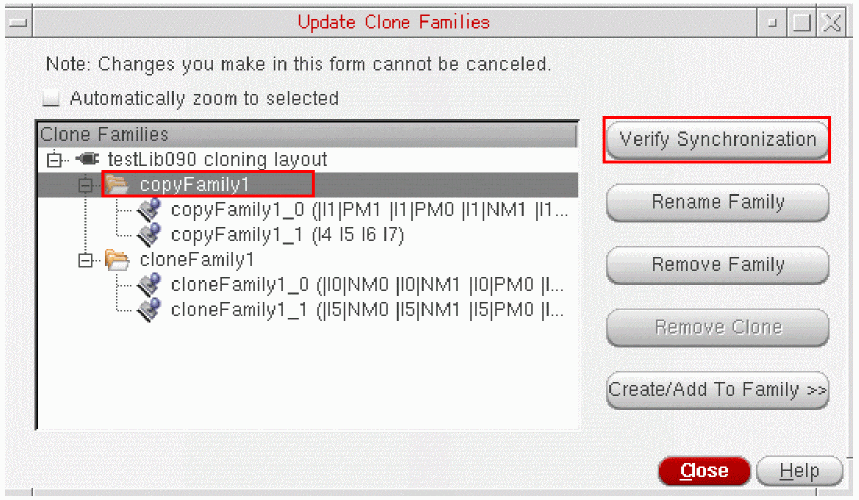
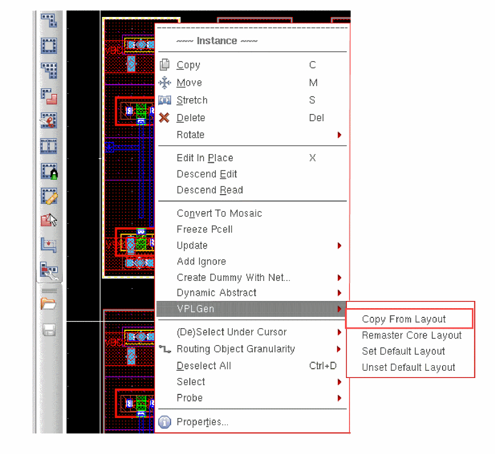

5
Generating a Layout
This chapter shows you how to use the Virtuoso® Layout Suite XL layout editor (Layout XL) to generate a layout and make an initial placement of components in it.
This chapter covers the following topics:
- Naming Conventions
- Place and Route Boundary
- Generating All Components from Source
- Generating Selected Components from Source
- Generating Clones
- Generating Synchronous Clones
- Generating Synchronous Copy
- Generating Dummy Instances
- Generating Mosaic Instances
- Generating Parameterized Layout Cells (VPLGen)
- Generating (Non)parameterized Layout Cells (VLGen)
- Generating Master Variants
- Generating Transparent Layout Hierarchy
- Loading Physical Information from Another Cellview
- Defining Pseudoparallel Connections
Naming Conventions
When generating and manipulating components in the layout view, Layout XL uses the naming conventions outlined in this section.
General Convention
By default, layout instances are generated without the OR bar ( | ). But, you can set the prefixLayoutInstNamesWithPipe environment variable to t to delimit hierarchy and to prefix the names of all the layout instances generated by Layout XL.
Layout instance naming convention with prefixLayoutInstNamesWithPipe set to t.
| Schematic | Layout |
|---|---|
Layout instance naming convention with prefixLayoutInstNamesWithPipe set to nil.
| Schematic | Layout |
|---|---|
Mfactored Devices and Folded Devices
Devices specified using the mfactor property in the schematic and those that are folded in the layout are named instName.integer in the layout.
For example, if you have a schematic instance named P0 with
mfactor = 3
the layout instances generated are named as follows.
| Schematic | Layout (with OR bar) | Layout (without OR bar) |
|---|---|---|
Series-Connected Devices
Devices specified using the sfactor property in the schematic are named instName.sinteger in the layout.
For example, if you have a schematic instance named R0 with
sfactor = 3
the layout instances generated are named as follows.
| Schematic | Layout (with OR bar) | Layout (without OR bar) |
|---|---|---|
lxCombination Devices
Devices defined using the lxCombination property in the schematic are named instName.msinteger in the layout.
For example, if you have a schematic instance named R0 with
lxCombination = (2k*2)/3+1500/4
the ten layout instances generated are named as follows:
| Schematic | Layout (with OR bar) | Layout (without OR bar) |
|---|---|---|
Nets in Series-Connected and lxCombination Devices
Nets associated with series-connected and lxCombination devices are named instName.sinteger.expandedNetinteger in the layout.
R0.s1.expandedNet1
where “expandedNet” signifies that the layout net has no real match in the schematic.
Constraint Transfer
Layout XL transfers all the constraints defined in the schematic view to the layout view, correctly mapping the constraints and their members between the two views.
The constraint transfer is triggered:
- Automatically when you start Layout XL.
- Automatically when you use the Generate All From Source command. Previously-transferred constraints are deleted and updated constraints are created in the layout.
- Automatically when you update components and nets.
- Manually when you use the Update Layout Constraints command. For more information, see Updating Layout Constraints.
- Optionally, when you load information from another physical cellview. For more information, see Flattening a Layout Instance.
Device correspondence information is maintained during the transfer. Logical and physical name mappings are tracked and constraints are updated appropriately to take account of folded instances in the layout.
Constraint Manager Assistant
You can manipulate these constraints on both schematic and layout views using the Constraint Manager assistant.
- Enter custom constraints in the schematic to drive layout. These are transferred to layout when Layout XL is initialized.
- Enter additional constraints in the layout, which are supported by the various physical design applications.
- Select a constraint in the Constraint Manager and see the constraint in question highlighted in the canvas.
Constraints transferred from schematic to layout are read-only and cannot be modified in the layout view. However, you can create new constraints in the layout to override the schematic constraints.
For more information on how to use the Constraint Manager, see
Constraint Mapping in One-to-Many Relationships
The following table shows how constraints are mapped when there is a one-to-many schematic to layout relationship.
Constraint Mapping in Many-to-One Relationships
Many-to-one relationships are handled by not adding duplicate members to layout constraints.
The following situations cause a warning to be issued and no layout constraint generated.
- A symmetry constraint containing a pair of instances with have different multiplication factors.
-
A layout structure constraint with schematic instances specified multiple times but which do not have matching layout instances; for example, the schematic instance is referenced three times in the constraint but has an mfactor of only
2in the layout.
Creation and Synchronization of Clusters
To promote interoperability with designs that originate in Innovus and allow layout placement tools to use oaCluster constraints, the constraint transfer mechanism converts a ciCon(cluster) constraint in the schematic to an oaCluster constraint in the layout and keeps the two synchronized during subsequent transfer operations.
ciCon(cluster) constraints and oaCluster constraints are synchronized only in a forward direction (from ciCon(cluster) to oaCluster). A change to an oaCluster does not affect its corresponding ciCon(cluster).oaCluster constraints with no corresponding ciCon(cluster) constraints are never deleted by constraint transfer operations. If you delete from the layout an oaCluster constraint with a corresponding ciCon(cluster) constraint, the oaCluster is recreated the next time constraints are transferred from the schematic.Place and Route Boundary
When you initialize a layout, Layout XL automatically generates a place and route boundary for the design.
Setting the Default Size for the Place and Route Boundary
To set the default size for the place and route boundary,
-
From the layout window menu bar, choose Connectivity – Generate – All From Source.
The Generate Layout form is displayed. - On the Generate tab, turn on the PR Boundary option.
-
On the PR Boundary tab, set the options to generate the shape and size of boundary you need.
For more information, see PR Boundary Tab. - When you click OK to generate the layout, the system draws the specified boundary in the layout canvas.
Creating a Place and Route Boundary Manually
To create a design boundary manually,
-
Use Create – P&R Objects – P&R Boundary.
For more information, see Creating Boundaries in the Virtuoso Layout Suite XL: Basic Editing User Guide.
Generating a Constraint-Driven PR Boundary
With advanced node licensing, during Generate All From Source and Update Components And Nets, Layout XL supports the generation of a PR boundary object for which the dimensions are based on the allowedPRBoundaryDimensions constraint require the PR boundary area to be modified, Generate All From Source allows increasing or snapping up the PR boundary area to meet the constraint. This also ensures that the generated devices are accommodated after the increase in area.
If the constraint is not defined, the PR boundary is created as usual based on the parameters specified in the PR Boundary Tab of the Generate Layout form.
The allowedPRBoundaryDimensions constraint can be applied separately for the horizontal and vertical directions to cover all the dimensions of a PR boundary. In this case, the generated PR boundary should meet both the constraints—horizontal and vertical.
Stretching, Moving and Deleting the Place and Route Boundary
To stretch, move, or delete the design boundary,
-
Use the layout editor Edit commands.
For more information on these commands, see Editing Objects in the Virtuoso Layout Suite XL: Basic Editing User Guide.
Moving Components Inside the Place and Route Boundary
To move all generated components and pins inside the boundary,
-
From the layout window menu bar, choose Connectivity – Generate – Place As In Schematic.
For more information, see Moving Generated Components into PR Boundary (Placing As In Schematic).
Updating the Placement Status Automatically
To automatically update the placement status of instances and pins when they are moved into or out of the PR boundary,
-
Type the following in the CIW.
envSetVal("layoutXL" "updatePlacementStatus" 'boolean t)
For details, see updatePlacementStatus.
This environment variable is honored by all interactive commands and automatic tools which cause instances and pins to be moved into or outside the PR boundary. It also includes situations where the PR boundary is moved or stretched to enclose or exclude an instance or pin.
When switched on, instances and pins with status unknown that are wholly inside the PR boundary after the edit are updated to status placed. Instances and pins with status placed that are wholly outside the PR boundary after the edit are updated to unknown.
To update the placement status of instances or pins in designs that are loaded in Layout XL for the first time, or which have been edited outside the Layout XL or GXL environment, do one of the following.
- Choose the Place – Update Placement Status menu command.
- Use the lxUpdatePlacementStatus SKILL function.
Generating All Components from Source
Use the Generate All From Source command to generate layout representations of the schematic design components. Generate All From Source deletes any existing components in the layout view and generates everything from scratch.
To generate all components from source:
-
From the layout window menu bar, choose Connectivity – Generate – All From Source.
The Generate Layout form is displayed.
The form remembers values set previously in the current Virtuoso session. When you open it for the first time, it shows the default values set in your.cdsenvfile.
You can also load predefined cellview information from an existing layout cellview. See Flattening a Layout Instance. - Set the options on the form as needed. For more information, see
-
Click OK in the Generate Layout form.
If you already have design elements in the layout canvas, a message box warns you that this command deletes all layout instances and wiring in the design.
Click Yes to dismiss the message and generate the layout view you specified.
Layout XL generates instances and pins equivalent to the symbols and terminals in the schematic view. Instances and pins are placed below the place and route boundary in the same relative positions as in the schematic. However, you can choose to place the instances and pins within the place and route boundary (design boundary) by setting the lxGenerateInBoundary environment variable.
Iterated pins are sorted and placed together in the layout. Constraints defined in the schematic are transferred to the layout view, as are the signal types assigned to individual nets.
To transfer the bus terminal and bus bit order (ascending or descending) information from the schematic to the layout, you need to set thecreateImplicitBusTerminalsenvironment variable before running the Generate All From Source command. This allows for the bus information to be implicitly annotated on the layout side, removing the need for running VerilogAnnotate. For more information on the environment variable, see createImplicitBusTerminals.
Alternatively, you can choose to create bus terminals implicitly by selecting the Create Implicit bus terminals option on the Generation tab. For more information, see Generation Tab.
Troubleshooting Generate All From Source
Any problems encountered during layout generation are reported in the CIW and in a Layout XL Info text window. Use Checking Against Source to get more information on the problems encountered and how to resolve them.
Generate All From Source and Schematic Parameters
-
Generate All From Source copies all the schematic parameters to the new layout instance with the following exceptions.
-
mfactorandsfactor -
Parameters that are always ignored.
instancesLastChanged instNamePrefix lxIgnoreParamForCAS lxIgnoredParams lxMFactorNum lxParamsToIgnore lxParamsToIgnoreForCheck lxPlacementStatus lxRounding lxStopList lxTimeStamp lxUseCell pin# posi
- Parameters set using the lxParamsToIgnore property or in the Parameters Tab form.
-
-
Generate All From Source applies all CDF callbacks before any instance is created if lxEvalCDFCallbacks is set to
t. The complete list of parameters found on the schematic instance (including the adjusted folding,sFactor, orlxCombinationparameters) is used to call the CDF; the resulting list is passed to the layout instance. - Generate All From Source does not maintain the value of the Folding threshold unless all device widths and all Width parameter values are specified consistently; for example, all in meters (10 μm is 1-e-5) or all in user units (10 μm is 10).
Generate All From Source and Inherited Connections
-
If you use inherited connections to assign more than one value to a global net, the
netSetproperty, which specifies the new value for a global signal, is not copied from the schematic instance to the layout instance. -
Any
netExpressionpin properties that have not been set are copied to the layout terminals. If multiplenetExpressionproperties exist for the same terminal name, then you are prompted to select one property to be preserved on the terminal. -
Layout nets inherit the
sigTypeattribute from the schematic. This means the signal type set for a net in the schematic is automatically passed to the layout during generation.If any changes are made to the schematic signal type, the same can be updated in the layout by using the Update Net Signal Type option on the Update Components and Nets form. If the net signal type needs to be manually updated in the layout, you can use the Property Editor assistant. The signal type for the selected net is listed as an Attribute in the Property Editor assistant. - Although it is recommended to use explicit terminals for layout generation, if required, inherited connections from the schematic can be mapped to physical pins in the layout. Generate All From Source can create layout terminals for implicit schematic terminals defined by inherited connections, if the layout master terminal has a defined net expression. The net expressions are resolved by the implicit inherited connections, or the net sets in the schematic.
-
If a layout instance master terminal has an inherited net expression (an implicit inherited connection) for a global layout net, Generate All From Source creates a physical-only layout terminal with no schematic equivalent. The terminal has the
physOnlyproperty set totso that it can be ignored by Layout XL functions, such as Update Components And Nets and Check Against Source, and by the digital applications further along the design flow.
Specifying the Components to be Generated
To specify the components to be generated:
-
Select the Generate Tab of the Generate Layout form.
-
In the Generate group box, select the Instances, I/O Pins, and PR Boundary options, as required.
- To chain transistors, select the Chain check box.
-
To divide transistors in the design into two or more individual folds, select the Fold check box.If the disableFolding environment variable is set and the folding threshold for the component type is set to
0, folding is disabled. -
To chain the individual folds of a transistor, select the Chain Folds check box.
Note:
- For the Chain Folds option to be available, only the Fold check box must be selected. If you select the Chain check box also, Chain Folds is deactivated.
-
Any devices to be chained or folded must belong to a component type that has Component class set to PMOS or NMOS and values set for the Active layer, Width parameter, and Folding threshold parameters. To change any of these parameters, update the appropriate
Component Types Attributes
value in the
Component Types Cells Table
of the Configure Physical Hierarchy window. Alternatively, update the LAM File Component Type Section.
If the devices to be chained or folded have their component class set to NFIN or PFIN, these devices must have their Number of fins parameter or the Width parameter specified to enable folding. For more information, see Component Types Mode or LAM File Component Type Section. - To stop Layout XL from generating layout pins for global nets in the schematic, select Except Global Pins.
- To stop Layout XL from generating layout pins for schematic pins that are connected to I/O pads, select Except Pad Pins.
-
To generate a snap boundary, select Snap Boundary.
You can generate a snap boundary only if the PR Boundary option is switched on.
- To stop Layout XL from generating layout pins for global nets in the schematic, select Except Global Pins.
- To stop Layout XL from generating layout pins for schematic pins that are connected to I/O pads, select Except Pad Pins.
-
To generate a snap boundary, select Snap Boundary.
You can generate a snap boundary only if the PR Boundary option is switched on.
-
To preserve any user-defined binding of devices between the schematic and the layout, select Preserve User-Defined Bindings.
This option preserves only user-defined one-to-one, many-to-many, many-to-one, and one-to-many device correspondence defined in the Define Device Correspondence form. It does not report missing devices or shapes within a bound group. For more information, see Updating Device Correspondence. -
To run connectivity extraction after the layout has been generated, select Extract Connectivity After Generation.
For more information, see Connectivity Extraction. -
To create a label specifying the library, cell, and view of your design just inside the center top edge of the boundary, set the createBoundaryLabel
environment variable.
Specifying the I/O Pins to be Generated
You specify the pins to be generated on the I/O Pins Tab.
For each pin listed, the form shows the parameters that will be used to generate its equivalent in the layout. You can remove or change the specification of any of the listed pins, or add new pins to be generated.
When generating pins, Layout XL uses the same naming convention as the Virtuoso Schematic Editor, allowing you to assign different names to terminals and nets. Where terminal and net names are different in the schematic, Layout XL creates pins with the same terminal name as in the layout, even though the net name associated with the pin might be different.
By default, this section lists all the top-level pins detected in the schematic design, including schematic pins that are connected to I/O pads (cells of type pad, padSpacer, or padAreaIO). To generate only pads but no pins, turn on the Except Pad Pins option on the Generate Tab (or on the Update Tab if you are using the Update Components and Nets form).
Power and ground pins defined at a lower level of the design hierarchy are not listed on the I/O Pins tab but are nevertheless generated in the layout view. The system issues an information message to tell you what has happened.
The system generates a pin for a stub net (a non-global netSet automatically created by the schematic extractor) only if the stub net is connected to an instance terminal. If it is unconnected, no pin is generated.
Layout XL also correctly propagates connectivity to nets that are connected via patchcords.
Specifying Default Values for All Pins
To specify default values for all pins:
-
Bring up the I/O Pins Tab of the Generate Layout form.
-
Choose the default routing layer from the Layer cyclic field.
The list of pin layers is obtained from the technology information applied to the design. - Specify the default Height and Width of the pins and the Number of pins you want to create.
- Check the Create box to specify that the pins are to be created in the layout view.
-
Click Apply.
The specified values are applied to all the pins displayed in the list box and the corresponding environment variables (initIOPinLayer, initPinHeight, initPinWidth, and initPinMultiplicity) are set appropriately.initPinHeight and initPinWidth are set only if the value you specify is greater than the default minimum width set for the layer in the technology file.
Specifying Values for Selected Pins
To update the values of selected pins in the list:
-
Bring up the I/O Pins Tab of the Generate Layout form.
- In the list box, select the pins you want to update.
-
Choose the routing layer for the selected pins from the Layer cyclic field.
The Layer Purpose Pair (LPP) list on the Generate Layout form is filtered based on the values specified for the initIOPinLayerNames and initIOPinPurposeNames environment variables. - Specify the default Height and Width of the selected pins and the Number of each pin you want to create.
- Check the Create box to specify that the selected pins are to be created in the layout view; clear it to prevent a pin from being generated in the layout.
-
Click Update.
The selected pins are updated with the new values.
Adding a New Pin
-
Bring up the I/O Pins Tab of the Generate Layout form, click Add New Pin.
-
Type in a pin name and click OK.
If the pin to be added has the same attributes as any of the existing pins in the pin list (pin name, pin layer, and/or purpose), then the added pin is highlighted. You can change the number of the highlighted pin in order to create the number of pins you require.
Creating Pin Labels
To generate name labels for each pin:
-
Bring up the I/O Pins Tab of the Generate Layout form.

- Turn on the Create Label As option and choose whether you want to create a Label object or a Text Display object.
-
If you choose to create Label objects, you can set the label style by clicking Options.
The Set Pin Label Text Style form is displayed.

-
Choose the options you want and click OK.
The corresponding environment variables are listed below.
labelDrafting labelFontStyle labelHeight labelJustify labelOverbar orientation pinTextLayer pinTextPurpose pinTextSameLayer pinTextSamePurpose
text. But, if the layer name does not exist as a validLayer in the technology file, the first layer in the list of validLayers is set as the layer to be used for creating the pin label. The layer purpose then defaults to the purpose associated with the first layer in the validLayers list.Ignoring Mismatched Pins
If a symbol in a schematic has more pins than the corresponding device on the layout, Layout XL generates a warning about mismatched pins. To ignore mismatched pins,
- In the schematic window menu bar, choose Edit – Hierarchy – Descend Edit to descend into the symbol of the instance.
-
In the schematic window, choose Edit – Properties – Cellview.
The Edit Cellview Properties form is displayed. -
Click Add to display the Add Property form and add a new Boolean property on the pin, for example,
unusedPin, and set it tot. -
Add the property name (
unusedPin) as a value in the propsUsedToIgnoreObjsenvironment variable in your.cdsenvfile.layoutXL propsUsedToIgnoreObjs string "unusedPin"
Or type the following in the CIW.envSetVal("layoutXL" "propsUsedToIgnoreObjs" 'string "unusedPin")
The next time you generate or update a layout or run the Check Against Source command, the software does not issue warnings about mismatched or missing pins.
Generating Optical Pins for the Virtuoso Photonics Solution (ICADVM20.1 Photonics Only)
Virtuoso_Photonics_Option license to use the functionality discussed in this section. For information on obtaining the required license, contact your local Cadence representative.
If you are using the Virtuoso Photonics Solution and have the Virtuoso_Photonics_Option license checked out, the Generate All From Source command enables you to create optical pins for the design.
If a pin is associated with an optical net, Layout XL automatically generates optical pins on an optical layer, such as the waveguide layer. By default, the layer to be used for the optical pin generation is determined from the value set for the phoPinLayer environment variable. If the environment variable does not have a valid layer set, the first photonic layer in the validLayer list is used.
Each optical pin can have the following attributes defined:
- Width: Width of the waveguide associated with the photonic port.
-
Radius: Curvature of the waveguide associated with the photonic port.
By default, the radius is not defined. - Angle: Access direction of the photonic port.
For more information on optical pins and the Virtuoso Photonics Solution, see
To generate an optical pin in the layout:
- Click the I/O Pins tab of the Generate Layout form.
-
Choose the default routing layer from the Layer cyclic field.
The default pin layer is determined from the value set for the phoPinLayer environment variable. -
Specify the default Width, Radius, and Input Angle of the pins you want to create.
- Select the Create check box to specify that the pins are to be created in the layout view.
- Click Apply to generate the pins in the layout.
To make any updates to the default optical pin values:
- Bring up the I/O Pins Tab of the Generate Layout form.
-
In the Optical tab, select the pins to be updated.
- Specify the new Layer, Width, Radius, and Angle, as appropriate.
- (Optional) Select the Create check box, if you want the pin to be created after the update.
- Click the Update button.
Generating Optical Chains (ICADVM20.1 Photonics Only)
Virtuoso_Photonics_Option license to use the functionality discussed in this section. For information on obtaining the required license, contact your local Cadence representative.
If you are using the Virtuoso Photonics Solution and have the Virtuoso_Photonics_Option license checked out, you can use the following Layout XL commands to chain optical waveguide instances:
- Generate All From Source
- Update Components And Nets
- Generate Selected From Source
- Generate Chained Devices
When using Generate All From Source and Update Components And Nets, the layout instances selected for chaining are checked using the phoIsWaveguide SKILL function to verify them as waveguide instances. If the selected instances are found to be waveguides, they are chained during layout generation.
However, when layout generation is being performed using the Generate Selected From Source command, all connected optical devices are chained. The phoIsWaveguide SKILL function is not used in this case.
You can also chain waveguide instances and top-level photonic pins using the Generate Chained Devices command or use the context-sensitive Chain menu option. When the selected set includes only waveguide instances and photonic pins, the Chain context-sensitive menu has only the Default option enabled. The other menu options, Top, Center, and Bottom, are disabled in this case.
- Preserve Existing Chains
- Use Device Order
- Interdigitate Chains
- Mirror
- Permute Pins
- Align PMOS
- Align NMOS
Related Topics
Composite Waveguide Editor (ICADVM20.1 Photonics Only)
Abutment in Virtuoso Photonics Solution (ICADVM20.1 Photonics Only)
Generating RF TLine Chains (ICADVM20.1 Virtuoso RF Solution Only)
Virtuoso RF Option license. For information on obtaining the required license, contact your local Cadence representative.
If you are using the Virtuoso RF Solution and have the Virtuoso RF Option license checked out, you can use the following Layout XL commands to chain TLine instances:
- Generate All From Source
- Update Components And Nets
- Generate Selected From Source
- Generate Chained Devices
Layout XL enables you to create two-dimensional TLine chains, unlike the usual MOS chains that are one-dimensional. The TLine chains are generated using the same orientation as in the schematic. The abutment of TLine pinFigs is supported with the center accessDir.
You can chain the TLine instances using Generate Chained Devices. However, top-level TLine pins cannot be abutted.
The following interactive chaining command options are not supported for TLine devices:
- Preserve Existing Chains
- Use Device Order
- Interdigitate Chains
- Mirror
- Permute Pins
- Align PMOS
- Align NMOS
Related Topics
Specifying the Place and Route Boundary
You specify the place and route boundary on the PR Boundary Tab.
Specifying a Rectangular Boundary
To specify a rectangular place and route boundary:
-
On the PR Boundary Tab, choose Rectangle.
- Specify the coordinates for the Origin of the boundary shape.
-
Use the controls in the Area Estimation group box to calculate the dimensions of the boundary.
For more information on how to use these controls, see PR Boundary Tab.
Specifying a Polygonal Boundary
To specify a polygonal place and route boundary:
-
On the PR Boundary Tab, choose Polygon.

-
Type the X and Y coordinates of each vertex of the polygon in the Points List field. For example, for a rectangle, type the following.
(0 0) (0 10) (10 8) (8 0) (0 0)
Preserving Floorplanning Objects
Use the controls on the Floorplan Tab to preserve existing floorplanning objects during layout generation.
-
On the Floorplan tab, check the objects you want to preserve.
Click All to select all the items in the list; None to deselect them all.

Preserving Snap Patterns during Layout Generation
Generate All From Source lets you preserve any Snap Patterns and Width Space Pattern (WSP) regions already defined in the layout view.
In addition, the following components and definitions related to a WSP data model are also preserved in the cellview:
-
widthSpacingPatterns -
widthSpacingSnapPatternDefs -
widthSpacingPatternGroups -
relatedSnapPatternDefs -
constraints for the global grid setup for
snapPatternDefsandwidthSpacingSnapPatternDefs -
the global grid offset reference for
snapPatternDefsandwidthSpacingSnapPatternDefs
You can set the option, Snap Patterns, in the Floorplan tab of the Generate Layout form.
Alternatively, you can choose to preserve the predefined patterns by using the preserveSnapPatterns environment variable.
Related Topic
Generating a Layout from Source Using SKILL
You can run Generate All From Source using one of the following methods:
- Using lxGenFromSource SKILL function.
-
Using a combination of the following functions, which lets you specify what is generated directly using SKILL.
lxGenerateStart
lxGetAvailablePinLPPs
lxGetPinNets
lxSetBoundaryOptions
lxSetAreaEstimationOptions
lxSetGenerateOptions
lxSetNetPinSpecs
lxSetPreserveFloorplanningOptions
lxGenerateFinish
For more information about these SKILL functions, see Virtuoso Layout Suite SKILL Reference.
Generating Selected Components from Source
Use the Generate Selected From Source command to incrementally generate schematic instances and pins in the layout view. You can select the components to be generated either before or after you launch the command. You can select the components to be generated either from the schematic canvas or from the
The instances generated using the Generate Selected From Source command are automatically bound to their schematic counterparts and have the correct connectivity.
You can generate the components in the layout view using one of the following generation modes:
-
As In Schematic – Use this mode to generate instances and pins either as a group or as individual components.
By default, the selected instances are placed as in the schematic. But, you can select a combination of instances and pins and change the alignment, spacing, and orientation of the selected components before you place them in the layout. You can also enable automatic folding for instances.
See Generating Components As In Schematic. -
Array – Use this mode to generate an array of ungrouped instances, a modgen, or a mosaic.
See Generating an Array. -
Individually – Use this mode to generate instances and pins one at a time.
When generating components individually, you can change the values of any properties and attributes associated with each object before you generate it. You can also enable automatic chaining and folding for instances.
See Generating Individual Instances and Generating Individual Pins.
- Generating Components As In Schematic
- Generating an Array
- Generating Individual Instances
- Generating Individual Pins
- Listing Unplaced Components
Additional Information
- The command honors any constraints entered using the Virtuoso Constraint Manager. It also applies all callbacks before any instance is created. The complete list of parameters found on the connectivity source instance (including the adjusted folding, sfactor, or lxCombination parameters) are used to call the CDF; the resulting list is passed to the layout instance.
- When Generate Selected From Source is active, clicking on a component in either the design canvas or the Navigator assistant only highlights the object, it does not select it. Consequently, any information displayed in the Property Editor assistant is not updated.
-
If a layout instance master terminal has an inherited net expression (an implicit inherited connection) for a global layout net, Generate Selected From Source creates a physical-only layout terminal with no schematic equivalent. This terminal has the
physOnlyproperty set totso that it can be correctly ignored by Layout XL functions such as Update Components And Nets and Check Against Source and by the digital applications further on in the design flow.
Generating Components As In Schematic
To generate schematic instances and pins in a single operation so that the generated components are placed almost as in the schematic view:
- From the layout window menu bar, choose Connectivity – Generate – Selected From Source.
-
Press F3 to display the Generate Selected Components form.
As In Schematic mode is enabled as the default Placement Mode.However, if you change the placement mode, the form opens with the last selected placement mode when opened the next time.
In the As In Schematic mode, you cannot change the properties and attributes associated with the selected components. However, you can set pseudoparallel nets. For more information, see Extracting Design Connectivity. -
In the schematic window, select the instances and pins you want to generate using one of the following methods.
-
Click the components in the schematic canvas or Navigator assistant. To select multiple components, keep the
Shiftkey pressed during selection. Alternatively, drag to enclose an area that has only the components that you want to select. To deselect a component, click the component while theCtrlkey is pressed. - Click Unplaced to view the Instance/Pin List, select the components you want, and click Apply to select them in the schematic window. See Listing Unplaced Components for more information.
- Right-click the ungenerated instances in the layout Navigator assistant and choose Generate Selected From Source, as shown in the figure below.
The selected instances remain highlighted until they are either deselected or generated in the layout view. You can select an instance in the schematic if it is not already bound to an instance in the layout. If an existing layout instance with a matching name is not bound to the selected schematic instance, the name of the instance generated in the layout is determined based on the renameConflictingLayoutInstances environment variable.
PressF3if the Generate Selected Components form is not displayed automatically.
-
Click the components in the schematic canvas or Navigator assistant. To select multiple components, keep the
-
Move your pointer into the layout canvas.
The outlines of the selected components follow the pointer in the canvas. -
Set the options you want for the selected components.
-
(Optional) Select Chain and Fold to automatically chain and fold the instances you are generating. To chain the individual folds of a transistor, select the Chain Folds check box.
Note:
-
If the disableFolding environment variable is set and the folding threshold for the component type is set to
0, folding is disabled. - The Chain Folds option is active when Fold is selected and Chain is deselected.
-
If the disableFolding environment variable is set and the folding threshold for the component type is set to
-
(Optional) Select Interdigitate Chains to automatically identify the nodes that qualify as pseudoparallel connections and define them during chaining and abutment.
Note:
- (Optional) Use the Alignment options to automatically align and space the components as they are placed. For example, set Align Spacing to 2 to automatically space the selected instances by 2 user units when they are generated and then click Align Bottom to align the bottom edges. For more information, see Align Objects using the Align Toolbar.
- Choose the orientation you need using the Rotate, Sideways, and Upside Down buttons.
For more information about all these options, see Generate Selected Components. -
(Optional) Select Chain and Fold to automatically chain and fold the instances you are generating. To chain the individual folds of a transistor, select the Chain Folds check box.
-
Click in the layout canvas to place the selected components at the required location.
The selected components are generated in the layout view replicating their schematic placement, as shown in the figure below.
Generating Virtual Hierarchy using Selected Schematic Components
If you have the Virtuoso Layout Suite EXL license checked out, the Generate Selected Components form displays an additional Design Planning group box in the As In Schematic placement mode.

The Virtual Hierarchy check box in the Design Planning group box is OFF by default, unless the form is opened using the
The Virtual Hierarchy option allows you to generate a “yet-to-be-realized” hierarchy for the selected schematic components, which can be accessed from the top level using the DESIGN PLANNING category in the Navigator assistant.
For more information on virtual hierarchies and the layout generation capabilities that are offered by Layout EXL to work with virtual hierarchies, see the Virtuoso Design Planner User Guide.
Snapping FinFET Devices during Layout Generation
If you are generating a layout for a design that uses FinFET devices, Layout XL correctly snaps these devices to the fin grid defined for the design.
- If you use the Generate Selected From Source command in the As In Schematic mode, the generated devices are automatically snapped to the fin grid.
- If you move a chain of abutted devices in the layout canvas, all the devices in the chain are snapped together, that is, the snapping does not break existing chains.
Generating an Array
Layout XL enables you to generate selected or unplaced schematic instances as an XL-compliant array in the layout view. You can create an array of instances with the same or different master, parameters, or connectivity.
You can choose to create an array of ungrouped instances, a modgen, or a mosaic.
-
Instance array: An array of ungrouped instances that is generated based on row or column values and the spacing values that you specify.
You can manually type in the X and Y spacing values in the fields provided, or use the generateXSpacing and generateYSpacing environment variables to specify the spacing values, as appropriate.
Instance arrays are XL-compliant and enable simple array generation for a group of selected components. However, the selected schematic instances must not be members of any top-level modgen constraint.
The selected components are generated in the layout as free objects, as displayed in the figure below. If you modify the array or spacing dimensions, you must regenerate the array.
-
Modgen: An array of instances that are grouped in a modgen constraint and have same or different connectivity and masters.
You can choose to abut all the modgen instances to generate a compact placement or specify the spacing values and reference layers for X and Y spacing, as appropriate. By default, the spacing is DRC correct and no reference layers are specified.
Alternatively, you can use the generateModgens environment variable to generate a modgen array.Cadence recommends that you generate a modgen if it is likely that the array will require updating after placement. To update the modgen, run the Modgen Editor.The selected components are generated in the layout as a group and are combined in a modgen constraint, as shown in the figure below.
-
Mosaic: A compact array of instances that belong to the same mfactored instance and, therefore, have the same master and connectivity. In addition, array creation is supported for vectored instances with same master and same connectivity for each bit.
To generate a mosaic array, the selected set must not contain any pins and the selected instances must not be members of any top-level modgen constraint. Mosaics have restricted routing capabilities and are recommended for generating large mfactored arrays because they consume less memory.The selected components are generated in the layout as a compact mosaic, as shown in the figure below. If required, you can modify the row, column, and spacing values of the generated mosaic by using the Property Editor assistant.
Mosaics have restricted routing capabilities and are recommended for generating large mfactored arrays because they consume less memory.The selected components are generated in the layout as a compact mosaic, as shown in the figure below. If required, you can modify the row, column, and spacing values of the generated mosaic by using the Property Editor assistant.
Depending on the row, column, and spacing values that you specify in the Generate Selected Components form, you can control the configuration of the array to be generated. The figure below displays the possible configurations in which a set of selected schematic components can be generated as an array in the layout view.

By default, the number of rows to be generated is set to 1 and the number of columns to be generated is set to the selected number of instances. However, you can choose to modify either the number of rows or the number of columns to be generated.
If the selected set of components cannot be generated as an array, a text label is displayed in the layout canvas to indicate this, as shown in the figure below.
- An array cannot be generated if any of the selected schematic instances are in a top-level modgen constraint.
-
From the layout window menu bar, choose Connectivity – Generate – Selected From Source.
The Generate Selected Components form is displayed (pressF3if it is not displayed).
- In the Placement Mode group box, choose Array.
-
In the schematic window; select the instances you want to generate using one of the following methods:
-
Click the components in the schematic canvas or Navigator assistant. To select multiple components, keep the
Shiftkey pressed during selection or area-select the components. To deselect a component, click the component while theCtrlkey is pressed. - Click Unplaced to view the Instance/Pin List form. In the form, select the instances to place and click Apply to select them in the schematic window. See Listing Unplaced Components for more information.
The selected schematic instances remain highlighted until they are either deselected or generated in the layout view. You cannot select an object in the schematic if an object with the same name already exists in the layout.Alternatively, right-click the ungenerated instances in the layout Navigator assistant and choose Generate Selected From Source. PressF3if the Generate Selected Components form does not display automatically. -
Click the components in the schematic canvas or Navigator assistant. To select multiple components, keep the
-
Move your pointer into the layout canvas.
The outlines of the selected instances follow the pointer in the canvas. -
Set the options you want for the selected components.
- Click in the layout canvas to place the selected instances at the required location.
Generating Individual Instances
To generate schematic instances one at a time in the layout view:
-
From the layout window menu bar, choose Connectivity – Generate – Selected From Source.
The Generate Selected Components form is displayed (pressF3if it is not displayed).
- In the Placement Mode group box, choose Individually from the drop-down list.
-
In the schematic window, select the instances you want to generate using one of the following methods:
-
Click the components in the schematic canvas or Navigator assistant. To select multiple components, keep the
Shiftkey pressed during selection or area-select the components. To deselect a component, click the component while theCtrlkey is pressed. - Click Unplaced to view the Instance/Pin List form. In the form, select the components to place and click Apply to select them in the schematic window. See Listing Unplaced Components for more information.
The selected instances remain highlighted until they are either deselected or generated in the layout view. You can select an instance in the schematic if it is not already bound to an instance in the layout. If there is an existing layout instance with a matching name which is not bound to the selected schematic instance, the name of the instance generated in layout is controlled by the renameConflictingLayoutInstances environment variable.Alternatively, right-click the ungenerated instances in the layout Navigator assistant and choose Generate Selected From Source. PressThe form expands to show the name and master of the first instance in the selected set (the current instance), along with the properties set on that instance, as shown in the figure below.F3if the Generate Selected Components form is not displayed automatically.
-
Click the components in the schematic canvas or Navigator assistant. To select multiple components, keep the
-
Move your pointer into the layout canvas.
The outline of the current instance follows the pointer in the layout window. -
Set the options and property values you want.
-
Select Fold to automatically fold the current instance.If the disableFolding environment variable is set and the folding threshold for the component type is set to
0, folding is disabled. - Select Chain Folds to automatically chain the folded instance.
- Choose the orientation for the instance using the Rotate, Sideways, and Upside Down buttons.
- Change the instance property values, if required. The instance properties are not shown when Fold is selected. To update a property, you must first turn off Fold.
The Chaining and Alignment options are disabled because you are placing only one instance at a time. For more information about these options, see Generate Selected Components. -
Select Fold to automatically fold the current instance.
-
Click in the layout canvas to place the current instance at the required location.
If the layout library and cellview are different from those of the schematic, the command copies all the parameters (including default parameters) into the layout view. If any of the default parameter values in the schematic is an empty string, this can cause Pcell evaluation to fail.
If you selected more than one instance, the next instance in the list becomes the current instance in the form. You can use the Previous and Next arrow buttons at the top of the properties section to quickly move back or forward through the set of selected instances without generating them. - Repeat steps 4 through 6 to generate the next instance.
Generating Individual Pins
To generate schematic pins one at a time in the layout view,
-
From the layout window menu bar, choose Connectivity – Generate – Selected From Source.
The Generate Selected Components form is displayed (pressF3if it is not displayed).
- In the Placement Mode group box, choose Individually from the drop-down list to generate the pins one at a time.
-
In the schematic window, select the pins you want to generate using one of the following methods:
-
Click the components in the schematic canvas or Navigator assistant. To select multiple components, keep the
Shiftkey pressed during selection or area-select the components. To deselect a component, click the component while theCtrlkey is pressed. - Click Unplaced to view the Instance/Pin List form. In the form, select the components to place and click Apply to select them in the schematic window. See Listing Unplaced Components for more information.
The selected pins remain highlighted until they are either deselected or generated in the layout view. You cannot select a pin in the schematic if an instance with the same name exists already in the layout.
The form expands to show the name of the first pin in the list (the current pin), along with the attributes set on that pin.
The current pin is highlighted in the schematic in the color assigned to the
Poly pinlayer. Selected pins that have not yet been generated are highlighted in the color assigned to thePoly pinlayer. -
Click the components in the schematic canvas or Navigator assistant. To select multiple components, keep the
-
Move your pointer into the layout canvas.
The outline of the current pin follows the pointer in the layout window. -
Set the options and pin attributes you want.
- Change the pin attributes if required. Any changes you make are applied to the current pin and also become the defaults for all subsequent pins in the selected set. For more information, see Generate Selected Components - Pin Options.
The Chaining and Folding and Alignment options and the orientation buttons are disabled because you are placing pins. -
Click in the layout canvas to place the current pin at the required location.
The pin has the connectivity indicated in the schematic and is automatically snapped to the placement grid.
If you selected more than one pin, the next pin in the list becomes the current pin in the form. You can use the Previous and Next arrow buttons at the top of the pin attributes section to quickly move back or forward through the set of selected pins. - Repeat steps 4 through 6 to generate the next pin in the selected set.
Listing Unplaced Components
To see a list of all schematic components not yet generated in the layout view:
-
From the layout window menu bar, choose Connectivity – Generate – Selected From Source.
The Generate Selected Components form is displayed (or pressF3). -
Click Unplaced.
The Instance/Pin List is displayed.
Wires, labels, text, instances with an ignore property, and instances that have already been placed in the layout are not considered available components and are not shown in the list. -
Choose one or more instances and pins in the list and click Apply.
The Generate Selected Components form changes to show the available information on the first component in the selected set.
Generating Clones
Cloning is the ability to replicate a section of the layout, associated with a section of the schematic, in such a way that the new piece of layout material can be placed at more than one location, with each part preserving the hierarchical structure of the design. Cloning differs from synchronous copying in that the cloned structure maintains its schematic correspondence and inherits the connectivity information, while a synchronous copy does not maintain any schematic correspondence. For more information on creating a synchronous copy, see Generating Synchronous Copy.
Layout XL also supports clone creation by setting a Clone Family constraint in the Constraint Manager. For more information, see Cloning Instances using a Clone Family Constraint and the
- Datapath bit slices, datapath and memory control blocks with identical logic cones, programmable logic structures, and other arrayed and iterated structures in device-level and gate-level custom digital design.
- Groups of analog/mixed signal components with identical constraints (for example, current mirrors, cascode stages, differential pairs, and other isomorphic structures).
- Instances of the same symbol master – or instances with the same logic but with differing parameters and hence a different symbol master – that have a flat layout representation.
- A chained set of devices or a part of the chain.
-
Members of a
CloneFamilyconstraint. -
Transparent instances in the layout such that the generated clone is also a transparent instance.
- For more information on transparent instances, see Generating Transparent Layout Hierarchy.
The section of the schematic or layout that is used as a template for the clone is called the clone source. The section of the schematic that is to be implemented by replicating the source is the clone target. The result of replicating the clone source to implement the clone target is the clone. For the clone source to be used to generate a clone target, the clone source should be bound.
You can use multiple connectivity sources and multiple layout cellviews, including layout cellviews that are open in read-only mode, to generate clones.The clone source that you select can comprise devices, pins, and (if selected from the layout canvas) interconnect structures such as wires and path shapes. You can also clone components that are implemented as one-to-many relationships defined using the mfactor property on a schematic instance. For more information, see Cloning Mfactored Components.
Invalid Source Structures
A source structure is considered invalid for cloning if it includes:
- any device that is part of a user-defined many-to-one binding (specified using the Define Device Correspondence form).
- a folded device that has only some of its folds selected for cloning.
-
instances that do not exactly match the
CloneDefof aCloneFamilyconstraint. - An instance that is neither bound nor ignored, which makes the device an invalid clone dummy device.
Target Search
You can search for matching target structures in the layout cellview from which the Generate Clones command is run, or search in the corresponding schematic cellview. You can search for matching target structures within the Selected Set Only, or use the entire schematic or layout cellview for the search, or search only within a Clone Family constraint, depending on the design situation.
- If the search is run in the schematic and Selected Set Only is deselected, the clone search ignores any devices that are already implemented in the layout.
- If the search is run in the schematic and Selected Set Only is selected, the clone search ignores any devices that are not selected in the schematic or that are already implemented in the layout.
- If the search is run in the layout and Selected Set Only is deselected, the clone search ignores any devices that are not yet implemented in the layout. In addition, the search ignores any devices that are implemented in the layout but placed inside the PR Boundary.
- If the search is run in the layout and Selected Set Only is selected, the clone search ignores any instances that are not selected in the layout. Selected instances placed inside the PR Boundary are not ignored.
-
If the search is run with Constraints Only selected, the clone search is confined to the other Clone Defs of the source Clone Family constraint.
For more information on the clone target search options, see Generate Clones form.
Exact and Non-Exact Matches
To clone components, you select the structure to be replicated (the clone source) and the software searches the design for target structures that match the source. You create a clone when you generate a target structure in your design.
To be considered a valid target, the instance master referenced by the components in the target must exactly match the instance master referenced by the components in the source. A target that also matches the source in terms of connectivity is considered an exact match. A target that tolerates slight differences in connectivity is a non-exact match, also known as a mutant clone.
You can use the options in the Generate Clones form to specify which differences are tolerated.
-
Allowed Permutation considers pin permutability when searching for matching target structures. If an appropriate permuteRule is defined for the device in question, and if permuting the pins on a device results in a match, then that match is reported (but only if no matching targets were found without permutation).
Example: Two NMOS devices connected by their D terminals will match two NMOS devices connected by their S terminals, provided there is a permute rule in place that allows the S and D pins to be permuted.
For more information, see Pin Permutation. -
Exact Parameters requires that the parameter values on the components in a target structure match exactly the parameter values on the components in the clone source. When switched off, Layout XL also reports target structures that have different parameters and values.
Example When switched off, an NMOS device in the source with w = 200 will match an NMOS device with w = 100 in the target.
If required, you can update the parameters and values to match when you generate a clone by checking the Update Layout Parameters to Match Schematic option in the Generate Clones form.
To prevent any layout-only parameters from getting updated, ensure that the required parameters are set as parameters to be ignored. If any abutment parameters are required for clone generation, they might need to be ignored as well.
You can set the parameters to be ignored using any of the following methods:-
Adding the layout-only parameters to the ignore for generation list in CPH.
See Ignoring Parameters and Terminals -
Add the layout-only parameters to the Parameters to ignore during generation and update list in the Connectivity form.
See Parameters Tab. -
Add the layout-only parameters to the Ignore for generation list in the LAM file.
See LAM File Mapping Section.
-
Adding the layout-only parameters to the ignore for generation list in CPH.
-
Exact Connectivity requires that the connectivity of the components in a target structure matches exactly the connectivity of the components in the clone source. When switched off, Layout XL also reports target structures where the set of instances is the same, but they are connected differently.
Example When switched off, two NMOS devices connected by their D and S terminals in the source will match two NMOS devices connected only by their S terminals in the target.
Searching for non-exact connectivity matches takes significantly longer than searching for exact matches. You can use the options on the Non-Exact Connectivity Matches form to limit the search.
- How the cloning engine finds matching targets, see the Generate Clones form.
- Solving problems with cloning, see Troubleshooting Cloning.
Types of Clones
The Generate Clones form lets you generate clones as
-
Synchronized Family
If the clone source is selected from the layout cellview in which the clone target is generated, the clone source and the clone target are gathered in a common clone family. The generated clones, in this case, are synchronized to the other members in the clone family.
Each clone group contains all the physical shapes, vias, instances, and groups in the layout implementation of the respective clone. If you make a change to one member of a synchronized family, all the other members are automatically changed in the same way. See Generating Synchronous Clones.
If the clone source layout cellview is different from the layout cellview from which the Generate Clones command is run, the clone source is not pushed inside a clone group. The clone targets, on the other hand, are pushed inside groups, but a synchronized clone family cannot be created. -
Grouped Objects
If the clone source group is selected from the layout cellview in which the target clone groups are generated, the clone source objects and the clone target objects are pushed inside a group. The groups created are neither synchronized clone groups nor gathered in a clone family.
Each group contains all the physical shapes, vias, instances, and groups in the layout implementation of the respective clone. Clones that are generated as groups are constrained in the ways they can be moved and rotated. See Cloning a Group of Components.
-
Free Objects
The components in the clone are generated as ungrouped components in the layout view from which the Generate Clones command is run. See Using the Generate Clones Form.
Cloning Instances with no Schematic Counterpart
The Generate Clones command correctly handles layout instances with no schematic counterpart (clone dummy devices), including those that are part of a chain.
Layout XL considers a layout instance to be a dummy device if either the instance or its master has at least one property included in the list of Properties used to ignore objects during check on the Parameters Tab of the Connectivity form or the instance has the physOnly attribute set. For more information, see Ignoring Components with no Schematic Counterpart.
When Layout XL detects a dummy device among the objects in the clone source, it generates a similar instance with the same properties in the target structure. This new instance is automatically named Ix, where x is an appropriate integer value assigned by the database.
Cloning Iterated Instances
Because they all have the same master and same connectivity, cloning considers the individual bits of an iterated instance to be equivalent. Consequently, cloning cannot guarantee the same relative placements of devices in the clone source and the matching targets. If required, you can change the relative placement of instances in the target structure manually by changing the correspondence of the individual instances in the source and the target. See Editing a Target Structure Before Generation for more information.
Cloning Instances with Inherited Connections
If a layout instance master terminal has an inherited net expression (an implicit inherited connection) for a global layout net, Generate Clones creates a physical-only layout terminal with no schematic equivalent. The physical-only terminal has the physOnly property set to t so that it can be correctly ignored by Layout XL functions such as Update Components And Nets and Check Against Source and by the digital applications further on in the design flow.
Cloning Synchronous Clones
You cannot create a synchronous clone that contains a synchronous clone. If the clone source includes groups of type syncClone, the groups are created as regular groups in the generated clone.
The only exception to this is if you are generating a synchronized family and the clone source comprises a single synchronous clone. In this case, matching target structures are generated as synchronous clones belonging to the same synchronized family.
Creating Modgens
You can create synchronous clones using Modgen figGroups as the source. The resulting clone family then comprises the existing Modgen figGroups in the clone source, and basic figGroups, called "pseudo-Modgen", in other clones.
A pseudo-Modgen figGroup cannot be edited. However, if you attempt to edit the figGroup, the Edit Cloned Modgen pop-up form displays, which suggests that the selected figGroup cannot be edited but the Modgen synchronized with the figGroup can be edited instead.
You can choose to hide the Edit Cloned Modgen pop-up form by setting the disableVXLClonedModgenEditPopUp environment variable to t. This results in the modgen synchronized with the pseudo-modgen figGroup to automatically get edited when Editing In Place a pseudo-modgen figGroup.
Using the Generate Clones Form
Clone generation using the Generate Clones form comprises two main procedures—clone source selection and clone target search and generation.
Selecting the Clone Source
To clone a section of your design, you can choose the components to be cloned from:
- a layout cellview from which the Generate Clones form is opened
- another open layout cellview, which could be open in read-only mode
- a corresponding schematic cellview
When choosing the clone source from a layout cellview, the steps for generating clones can vary slightly depending on whether or not the clone source exists in the layout cellview from which the Generate Clones command is run.
Scenario 1: Generating clones when the clone source is selected from the layout cellview from which the Generate Clones command is run, or from the schematic cellview used as the connectivity reference for this layout cellview:
-
In the layout canvas, select the individual component or components within an area that need to be cloned and choose the Connectivity – Generate – Clones command.
Alternatively, in the schematic cellview, select the individual component or components within an area that need to be cloned. Then, in the layout cellview in which the clone needs to be generated, choose the Connectivity – Generate – Clones command.
Note:
- The clone source selected from the schematic cellview is considered valid only when it is correctly bound.
- If the structure you want to clone is a partially implemented mfactored component, you must select it in the layout canvas.
The Generate Clones form is displayed, as shown in the figure below.
If the selected instances and shapes form a valid clone source, the Clone Source fields are already filled in when the form opens, as shown in the figure above.
If the clone source is selected from the layout cellview in which the target clone needs to be generated, the name of the layout cellview as displayed in the Clone Source group box is the same as that of the current layout cellview. This is illustrated in the figure below.
Instead of opening the Generate Clones form with the clone source already selected, you can also open the form with nothing selected. After the form opens, as shown in the figure below, select the clone source in the layout or schematic canvas, and click Update From Selected.
If the selected instances and shapes form a valid clone source, the instance names are displayed in the clone source fields. You can use the same method to change the clone source without closing the form.
Scenario 2: Generating clones when the clone source is selected from one layout cellview and the clones need to be generated in another layout cellview.
- Choose the Connectivity – Generate – Clones command to open the Generate Clones form in the layout cellview in which the clones need to be generated.
-
In the Layout Cellview drop-down list, select the layout cellview to use as the source cellview.The Layout Cellview drop-down lists all the layout cellviews open in Layout XL that have a corresponding connectivity reference available, including any cellviews that are open in read-only mode. See Cloning between Multiple Cellviews.
Searching for and Generating the Clone Target
After you have selected a suitable clone source, you can use the Generate Clones form to search for and identify appropriate clones to generate the target clone structure.
To search for and generate the clone target:
-
In the Search group box, choose to search the target clone in the schematic or layout canvas, as appropriate.
- Choose whether to search for the target clone in the entire Schematic or Layout or within the Selected Set Only.
-
Choose the search criteria Allowed Permutation, Exact Parameters, and Exact Connectivity, as appropriate.
See Generate Clones and Non-Exact Connectivity Matches for more information on these options. -
Click Search to find the matching target structures in the design.
Depending on the design situation.- If the search is run in the schematic and Selected Set Only is deselected, the clone search ignores any devices that are already implemented in the layout.
- If the search is run in the schematic and Selected Set Only is selected, the clone search ignores any devices that are not selected in the schematic or that are already implemented in the layout.
- If the search is run in the layout and Selected Set Only is deselected, the clone search ignores any devices that are not yet implemented in the layout. In addition, the search ignores any devices that are implemented in the layout but placed inside the PR Boundary.
-
If the search is run in the layout and Selected Set Only is selected, the clone search ignores any instances that are not selected in the layout. Selected instances placed inside the PR Boundary are not ignored.
If the search is likely to take a long time, you will see a pop-up inviting you to do one of the following.- Click OK to continue the search.
- Click Cancel to return to the Generate Clones form where you can tighten the criteria either by reducing the search area or by requesting exact matches only.
-
Press
Ctrl-cto stop the search. The system may take a few minutes to respond. The matches that were already found are not removed from the list of Clones Found.
-
Choose from Free Objects, Grouped Objects, and Synchronized Family from the Create Clones as pull-down list and select the other Create Options, as required.
If you choose to display draglines. see Changing the Appearance of Draglines for more information.
If you choose to place the clones as an array, see Placing Clones as an Array for more information. -
Select one or more devices from the list of Clones Found and move your cursor into the layout canvas.
An image of the clones to be generated follows the cursor. -
Select the orientation options you want (Rotate, Flip Horizontal, Flip Vertical) and click at the required location in the layout canvas to place the first clone.
The target clones are generated in the layout canvas as grouped objects and you can verify this by using the Navigator assistant, as shown in the figure below.
If you selected more than one target structure from the list and you chose not to place the clones as an array, click again to place the second clone, and so on.
Editing a Target Structure Before Generation
When searching for matching target structures, Layout XL does not consider the relative placement of instances in the source structure as long as swapping these instances does not change the source topology. Additionally, cloning considers the individual bits of an iterated instance to be equivalent because they all have the same master and same connectivity. For these reasons, the relative placement of instances in a target structure can differ significantly from that in the clone source.
The Modify Correspondence form lets you change the relative placement of instances in the target structure manually by changing the correspondence of the individual instances in the source and the target. When you modify the correspondence manually, Layout XL checks that the connectivity of the modified target structure remains valid before allowing you to generate the clone.
To modify the correspondence of source and target instances:
- Create a list of matching target structures using the steps described in Using the Generate Clones Form.
-
Select a structure from the list and click Edit.
The Modify Correspondence form is displayed.
The instances in the source structure are listed under Connectivity Source. The list is read-only. The corresponding instances in the target structure are listed under Connectivity Target. When you select an instance in the target structure, the corresponding instance in the source structure is highlighted.
- To change the correspondence of a single instance, select the instance in the Connectivity Target list and use the arrow buttons to move it up or down in the list.
- To swap the correspondence of two instances, select the instances and click Swap.
-
When you have finished modifying the correspondence, click OK.
Before accepting the new correspondence, Layout XL checks that the connectivity of the target structure remains valid. - Generate the clones using the steps described in Using the Generate Clones Form.
Cloning Instances using a Clone Family Constraint
A Clone Family constraint represents a synchronous clone family, which consists of two or more Clone Defs, where a Clone Def is an ordered list of bound instances that are contained in a clone.
In general, a Clone Family constraint can be represented by the illustration below:
A Clone Family constraint can be created using:
- The Constraint Manager in the schematic or layout view
- The Generate Clones form in the layout view
Using the Constraint Manager to Generate the Clone Family Constraint
To add a Clone Family constraint using the Constraint Manager;
- In the schematic or layout canvas, select the instances to be added to the constraint and choose the cloneFamily option in the Constraint Creation menu in Constraint Manager.
A new Clone Family constraint is added to the Constraint Manager and the selected instances are added to the constraint as members of the Clone Def associated with the constraint.
Note:-
If the same instances end up being in two Clone Family constraints, the new Clone Family constraint is not created. For example, if a Clone Family constraint comprises instances
IM0andIM1, Layout XL does not allow creating another Clone Family constraint that will contain these two instances. -
If the instances selected for creating a Clone Family constraint contain any unbound instances, the unbound instances are added to the Clone Def that is generated.
-
If the same instances end up being in two Clone Family constraints, the new Clone Family constraint is not created. For example, if a Clone Family constraint comprises instances
You can also use the Constraint Manager to add new clones to an existing clone family. To do this, use the Add Clone option in the context menu of the selected Clone Family constraint.
To delete an existing Clone Family constraint or a Clone Def, select the Delete option in the associated context menu. Deleting a clone from a Clone Family constraint does not desynchronize the clone family.
For more information on how to add a Clone Family constraint using the Constraint Manager, see the
Using the Generate Clones Form to Generate the Clone Family Constraint
In the layout view, the Generate Clones form provides the following options to generate and update the Clone Family constraint:
-
Search – Constraint Only
Confines the clone target search to the Clone Family constraint within the selected search area—schematic or layout. See Constraint Only for more information.
Environment variable: cloningSearchInConstraintOnly -
Create – Update Constraint
Depending on what the clone source includes, the option creates a new Clone Family constraint, adds a new Clone Def to an existing constraint, or leaves the existing constraint unaltered. See Update Constraint for more information.
Environment variable: cloningUpdateConstraint
Constraint Only
Constraint Only searches for matching target structures only within the other Clone Defs that belong to the same Clone Family constraint as the source. The option is enabled only when the clone source belongs to a Clone Def. The Clone Defs found during the search are ordered in the same manner as they exist in the constraint.
If Constraint Only is deselected, the clone target search is first conducted within the source Clone Family constraint, followed by a search within the remaining clone target search space.
Listed below are some conditions that determine whether a clone source can be considered as valid and what determines if a Clone Def can be found as a clone target:
- If a Clone Family constraint is already present in the layout Constraint Manager, for the clone source to be considered valid, if an instance from the clone source belongs to a Clone Def, all the bound instances in the clone source should exactly match the Clone Def instances. The clone source is rejected if it has either less or more bound instances compared to those in the source Clone Def. In addition, the clone source can include shapes and/or ignored instances.
- If the clone source is a perfect Clone Def, instances that are members of another Clone Family constraint are not considered as clone targets.
Let us now consider some case scenarios that illustrate the conditions in which a clone source is considered valid. Let us assume that the Clone Def for these cases comprises instances I1, I2, and I3.
Scenario 1: Clone source consists of instances I1, I2, and I3, and the instances are interconnected.
The clone source is considered valid as it exactly matches the Clone Def. The clone search will find other Clone Defs from the same clone family but not the Clone Defs from other clone families.
Scenario 2: Clone source consists of instances I1, I2, and I3, but the instances are not interconnected.
Search option Constraint Only is automatically selected and grayed out. Only the instances in the other Clone Defs belonging to the same Clone Family constraint are considered as candidates.
Scenario 3: Clone source consists of instances I1, I2, I3, and I4 – the clone source contains an additional instance compared to the Clone Def.
In this case, the clone source is rejected and a message displays suggesting that the clone source must be an exact match of the Clone Def for it to be considered valid.
Scenario 4: Clone source consists of I1 and I2 – the clone source has one less instance compared to the Clone Def.
In this case, the clone source is rejected and a message displays suggesting that the clone source must be an exact match of the Clone Def for it to be considered valid.
Update Constraint
If the Clone Family constraint is not already present for the selected instances, Update Constraint creates a new Clone Family constraint and the associated Clone Def in the Constraint Manager, based on the selected synchronous clone figGroups. If a Clone Family constraint already exists, Update Constraint either leaves the constraint as is, or adds a new Clone Def, if appropriate.
By default, Update Constraint is deselected. Therefore, no constraints are created or updated unless the option is selected.
If Update Constraint is selected and:
- The clone source does not belong to a Clone Def, a new constraint is created in the layout Constraint Manager that comprises the clone source and the clone target(s).
- The clone source belongs to a Clone Def, no update is made to the Clone Family constraint, if the clone found is already part of a Clone Family constraint. Also, no new Clone Family constraint is created. But, if the clone found does not belong to a Clone Family constraint, the constraint is updated. A new Clone Def is added to the clone source Clone Family constraint in the layout Constraint Manager.
Using Iterated Instances to Generate the Clone Family Constraint
When the instances selected for generating a Clone Family constraint are iterated instances, the Constraint Member Select form displays to confirm which instances to use for the constraint. If the selected instances belong to a Clone Def, the instances in the form are sorted according to the iterated instance order. For example, in a Clone Def comprising instances IM14.1 to IM14.4, IM14.1 is the first instance in the Clone Def.
Using Mfactored Instances to Generate the Clone Family Constraint
An mfactored instance is considered a single instance in the schematic view. Therefore, the instances are not split in the schematic Constraint Manager.
Cloning a Group of Components
To clone a group of components,
-
Create a cell containing all the devices and then clone the cell using the procedure in Using the Generate Clones Form.
This ensures that all the cells or similar circuit sections have the same layout parasitics associated with them.
Cloning between Multiple Cellviews
You can generate a clone in a layout different from the one in which you selected the clone source.
To clone components across multiple layout cellviews:
-
Open both the source and the target layout cellviews in Layout XL.
- In the target layout cellview, choose the Connectivity – Generate – Clones command to open the Generate Clones form.
-
In the Layout Cellview drop-down list, select the layout cellview to use as the source cellview.The Layout Cellview drop-down list shows all the layout cellviews open in Layout XL that have a corresponding connectivity reference available, including any cellviews that are open in read-only mode.The source cellview that you select is automatically brought up.
-
In the source cellview, select the individual component or select the components within an area and choose the Update From Selected command in the Generate Clones form.
The layout components you selected as the clone source and their schematic counterparts are displayed in the appropriate fields in the Clone Source group box. -
In the Search group box, choose whether to search for the target clone in the entire Schematic or Layout or within the Selected Set Only.
-
Choose the search criteria Allowed Permutation, Exact Parameters, and Exact Connectivity, as appropriate.
See Generate Clones and Non-Exact Connectivity Matches for more information on these options. -
Click Search to find the matching target structures in the design.
Depending on the design situation.- If the search is run in the schematic and Selected Set Only is deselected, the clone search ignores any devices that are already implemented in the layout.
- If the search is run in the schematic and Selected Set Only is selected, the clone search ignores any devices that are not selected in the schematic or that are already implemented in the layout.
- If the search is run in the layout and Selected Set Only is deselected, the clone search ignores any devices that are not yet implemented in the layout. In addition, the search ignores any devices that are implemented in the layout but placed inside the PR Boundary.
-
If the search is run in the layout and Selected Set Only is selected, the clone search ignores any instances that are not selected in the layout. Selected instances placed inside the PR Boundary are not ignored.
If the search is likely to take a long time, you will see a pop-up inviting you to do one of the following.- Click OK to continue the search.
- Click Cancel to return to the Generate Clones form where you can tighten the criteria either by reducing the search area or by requesting only exact matches.
-
Press
Ctrl-cto stop the search. The system may take a few minutes to respond. The matches that were already found are not removed from the list of Clones Found.
-
Choose from Free Objects, Grouped Objects, and Synchronized Family from the Create Clones as pull-down list and select the other Create Options, as appropriate.
If you choose to display draglines. see Changing the Appearance of Draglines for more information.
If you choose to place the clones as an array, see Placing Clones as an Array for more information. -
Select one or more devices from the list of Clones Found and move your cursor into the layout canvas.
An image of the clones to be generated follows your cursor, as shown in the figure below.
-
Select the orientation options you want (Rotate, Flip Horizontal, Flip Vertical) and click in the layout canvas to place the clone at the required location.
The target clones are generated in the target layout canvas as grouped objects and you can verify this by using the Navigator assistant, as shown in the figure below.

Cloning Mfactored Components
Layout XL handles one-to-many relationships defined using the mfactor property on a schematic instance.
For example, if you have a component with an mfactor of 100, you can choose ten of these components, wire them together in the layout canvas, and then clone the resulting structure ten times to generate all the mfactored instances.
You can clone mfactored components both partially and in their entirety across multiple hierarchy levels, including source structures that include folded and abutted devices. The following limitations apply.
- The selected set must not include folded mfactored devices generated in a previous release; these must be regenerated in the current release.
- When cloning a folded instance, all the folds of the regular device or mfactored device part must be included in the clone source selection.
- When cloning mfactored devices that are partially implemented in the layout, you must select the clone source from the layout canvas.
The examples that follow illustrate what the cloning functionality considers to be valid targets for a number of different mfactored source structures.
Example 1: Mfactored component instance
If the clone source is an mfactored component instance (for example, an NMOS instance with m=2), then the following are considered valid clone targets.
- Another mfactored component instance; for example, another nmos instance also with m=2 (see example below).
-
Two non-mfactored NMOS instances connected in parallel.
Schematic Layout


Example 2: Mfactored component instance partially generated in the layout
If the clone source is one or more parts of an mfactored component instance that is partially generated in the layout, then the following are considered valid clone targets.
- The remaining components in the mfactored instance (see example below).
-
The appropriate number of non-mfactored NMOS instances connected in parallel.
Schematic Layout


Example 3: One or more of multiple mfactored instances partially generated in the layout
If the clone source is one or more of multiple mfactored component instances that are partially generated in the layout, then the following are considered valid clone targets.
- The remaining mfactored component instances that follow the same pattern (see example below).
-
The appropriate number of non-mfactored NMOS instances connected in parallel.
Schematic Layout

Example 4: Mfactored component instance with other component instances
If the clone source is an mfactored component instance along with other component instances, then the following are considered valid clone sources.
- Any other identical configuration with mfactored component instances which have the same mfactor value.
-
The appropriate number of non-mfactored NMOS instances connected in parallel.
Schematic Layout

Example 5: One or more of an mfactored component instance partially generated in the layout along with other component instances
If the clone source is one or more of an mfactored component instance that is partially generated in the layout along with other component instances, then any configuration with the same topology but which only partially implements the mfactored components in the same way as the clone source is considered a valid clone target.
| Schematic | Layout | |


Example 6: Although clone source contains only non-mfactored devices, clone target can use mfactored devices
If the clone source is two non-mfactored NMOS instances connected in parallel, then the following can be considered valid clone targets.
- An mfactored NMOS instance with m=2
-
Parts of an mfactored NMOS mfactored instance with m>2
Schematic Layout

Example 7: Clone target uses parts of a device with an mfactor value greater than that on the clone source
If the clone source is an mfactored component (m=m1), which is fully realized in the layout, then the appropriate number of parts of an mfactored component (m>m1), is considered a valid clone target.
| Schematic | Layout | |


The same principle applies when devices with different mfactor values are combined with other devices.
| Schematic | Layout | |
Example 8: No valid clone targets
The clone source is a fully-implemented mfactored component (m=m1) and the schematic has the following other components that are not yet realized in the layout:
- Another mfactored component with the same master (where m<m1).
- Another non-mfactored component with the same master.
The clone source is = MN1.1, MN1.2, and MN1.3 (m=3 in schematic)
The schematic also contains MN2.1 and MN2.2 (m=2 in schematic) and a non-mfactored instance MN3.
In this case there are no matching targets for the clone source.
Placing Clones as an Array
By default, if you select multiple clones from the Clones Found list, you can place only one selected clone at a time in the layout canvas. You can verify this in the Navigator assistant by observing that only one clone group, such as cloneFamily1_1, in the figure below gets generated, which maps to the first clone from the selected list.
The other two selected clones that are not yet placed, still appear selected in the Clones Found list, as shown in the figure above. Also notice that the pointer in the layout canvas is now followed by another clone, which corresponds to the next clone in the list of selected clones. To place this clone and any remaining selected clones, you need to click in the canvas as many times as the number of selected clones to place.
Instead of placing the selected clones one by one, as described above, you can choose to place all the selected clones in a single click as a clone array. To do this, choose the Place Clone as Array check box in the Generate Clones form, as shown in the figure below.

When the Place Clone as Array check box is selected, the Array Settings button is enabled. Clicking the Array Settings button opens the Clone Array Settings form that you can use to define the specifications for the clone array to be generated.
Specifying Clone Array Settings
In the Clone Array Settings form:
-
Specify the number of clones to be generated per Row or Column.
Environment variables: -
Specify the Clone X Spacing to be used when placing the clones in columns.
Environment variable: cloneArrayXSpacing
For information about how the array spacings are applied, see Determining the Clone Array Spacings. -
Specify the Clone Y Spacing to be used when placing the clones in rows.
Environment variable: cloneArrayYSpacing
For information about how the array spacings are applied, see Determining the Clone Array Spacings. -
Click OK to save the clone array settings, which will be used the next time you generate clones.
All the clones that you selected from the Clones Found list follow the pointer in the layout canvas, and are placed together on a single click, as shown in the figure below
You can also verify this using the Navigator assistant, as shown in the figure below. Notice that the Navigator assistant displays new clone groups that have been created for all the clones that were selected for generation.
Determining the Clone Array Spacings
To determine the array spacings (both X and Y) to be applied between the clone bBoxes, the clone bBoxes are first computed from the merged bBoxes of clone figs (shapes + instances).
For determining the spacing between the instances, the displayed bBoxes are used. Therefore, the clone bBox computation depends on the options selected on the
- If the use True BBox option is selected, the true bBoxes of the instances are used to compute the clone bBox.
- If the Instance Drawing Mode option is set to P&R Boundary, the instance PR boundaries are used to compute the clone bBox.
- If the Instance Drawing Mode option is set to Snap Boundary, the instance snap boundaries are used to compute the clone bBox.
Generating Synchronous Clones
Synchronous clones are the clones that stay synchronized during editing— changes made to one member of a family are automatically reflected in all the other members of the clone family.
You can use the Synchronized Family option on the Generate Clones form to create multiple clones as members of a single synchronized family. The clone source and the individual clones are each generated as a group in the layout view and linked to the other members in the same synchronized family, with each group containing all the physical shapes, vias, instances, and groups in the layout implementation of the target structure.
If you add a new instance to an existing synchronous clone using either the Create Instance or Generated Selected From Source command, or by removing an ignore property from an existing instance inside the clone, the clone in question is not desynchronized from its family. Note, however, that it may no longer form a valid clone source, in which case you will be unable to use the Generate Clones, Create Family, or Add to Family commands on that structure.
Synchronous Clones and Instance Creation
If you add a new instance to an existing synchronous clone using the Create Instance, Copy, or Generate Selected From Source commands, the system automatically adds a similar instance to the other clones in the family, ensuring that the family remains synchronized. If you add or remove an ignore property from an existing instance inside the clone, the clone is not desynchronized from its family, but the change to the property is not replicated in the other clones in the family.
In both cases, the clone in question may no longer form a valid clone source, which means you will be unable to use the Generate Clones, Create Family, or Add to Family commands on that structure.
Synchronous Clones and Dummy Devices
Layout XL considers a layout instance to be a dummy device if either the instance or its master has at least one property included in the list of Properties used to ignore objects during check on the Parameters Tab of the Connectivity form or the instance has the physOnly attribute set.
When Layout XL detects a dummy device among the objects in the clone source, it generates a similar instance with the same properties in the target structure. This new instance is automatically named Ix, where x is an appropriate integer value assigned by the database.
Layout XL considers a dummy device as a simple shape in the clone structure. Therefore, dummy devices are synchronized in the same way as any other shape in a family of synchronous clones. Any physical editing, such as move, rotate, or delete performed on a dummy device (including those used in chains of devices) is reflected in every other member of the synchronized family.
To add a previously defined dummy device to a synchronous clone:
- Create the instance for the dummy device outside the clone family.
-
Add the appropriate ignore-for-check property to the instance.
See Ignoring Components with no Schematic Counterpart. - Use the Edit – Group – Add To Group command to push the dummy device inside the clone family.
All the other occurrences of the synchronous clone are populated with a similar dummy device. These new devices are named automatically and are connected as required by the Layout XL connectivity extractor.
Synchronous Mutants
Mutants are clones that may not exactly match the source in connectivity. So, when searching for clone targets on the Generate Clones form with the option Exact Connectivity set to false, you may find mutant targets in your search result. These mutants will be displayed as mutant (number) instanceName1 instanceName2, and so on.
As the resulting mutants do not exactly match the source in connectivity, they have missing or extra nets called partial nets. However, these mutants can be considered as copies of the layout clone source with the connectivity of the schematic targets. Therefore, all the routing shapes present in the clone source are copied to the generated mutant, even if the shape net is a partial net, which is missing in the mutant target. As a consequence, the generated target clone is physically identical to the clone source, even if the clone is a mutant. This allows for synchronous mutants to be created as the cloning synchronization mechanism does not require any logical aspects to be met as long as the clones are physically identical.
Synchronous Clones and Device Abutment
You cannot abut two devices if one of the devices is in a synchronous clone and the other is not in the same synchronous clone.
Synchronous Clones and Pin Permutation
You cannot permute two pins if one of the pins is on a device in a synchronous clone and the other pin is on a device that is not in the same synchronous clone.
If you permute two pins on an instance in a synchronous clone, the change is not propagated to the other members of the family, nor is the clone desynchronized from the other members of the family, because pin permutation is a logical rather than a physical update.
Generating a Family of Synchronous Clones
To generate a family of synchronous clones:
-
Create a list of matching targets using the steps described in Using the Generate Clones Form.
The matching targets are displayed at the bottom of the Generate Clones form in the Clones Found pane. -
Choose Synchronized Family from the Create Clones as drop-down list.
- From the list of clones found, select all the target structures you want to include in the synchronized family.
-
Move your cursor into the layout canvas and click once to generate each of the clones you selected.If the synchronous family you are creating contains only one group, Layout XL uses this existing group to implement the synchronous clone. This prevents the creation of an unnecessary level of hierarchy.The clone source and the target clones are generated as two synchronized clone groups that can be identified in the Navigator assistant by their unique names, such as
cloneFamily1_0andcloneFamily1_1in the figure below.
Note:
Exceptions to Synchronous Clone Generation
If you are experiencing any of the following design situations, synchronous clone generation using the Generate Clones command is not possible:
-
Scenario 1: When the selected clone source includes only the parent, not the child
If two figs exist in a parent-child relationship and you select only the parent fig, the child fig automatically gets added to the clone source figGroup but the clone target figGroup only has the parent fig. Therefore, the synchronous clone cannot be created as the clone source and the clone target do not have the same number of figs. -
Scenario 2: Some clone source figGroups are only “partially selected”
If the schematic window is used to cross-select layout instances that are in a layout figGroup, and if only some of the instances from the layout figGroup are selected, only the “selected” layout instances are cloned. Therefore, the synchronous clone cannot be created as the clone source and the clone target do not have the same number of instances. -
Scenario 3: The clone source and target are not in the same cellview
Layout XL does not support synchronous clone generation when the clone source and the clone target belong to different cellviews. -
Scenario 4: The clone source is a clone figGroup from a family that is not "verified"
If the clone source contains a figGroup from a family that is not verified, the Generate Clones command cannot use it for generating a synchronous clone. To verify the clone families before they can be used as a clone source, either Edit In Place one of the clones or manually run Verify Synchronization using the Update Clone Families form. -
Scenario 5: A mismatch exists between the layout instance master of the clone source and the clone target
This is likely when the clone source and the clone target members are processed differently for abutment, causing a mismatch that prevents them from getting generated as synchronous clones.
Editing a Clone in a Synchronized Family
Because synchronous clones are implemented using groups, you cannot edit the components in the clone from the top level of your design. To edit a synchronous clone, you must use the Edit In Place command.
If you make a change to the physical topology of one member of a synchronized family, that change is propagated to all the other clones in the family.
To edit a member of a synchronized family:
-
From the layout window menu bar, choose Edit – Hierarchy – Edit In Place and select the clone you want to edit.
Alternatively, in the layout window, select the clone you want to edit and choose the Edit – Hierarchy – Edit In Place command.
The Edit Synchronous Clone dialog box pops up, warning that the clone you are about to edit is a member of a synchronized family.
-
Click OK to proceed with editing the entire clone family.
You can also choose not to see this dialog again. -
The layout window is displayed. Select one of the instances in the clone you are editing, and choose an appropriate Edit command, such as Move.
The corresponding instance is moved in each of the other clones in the synchronized family, as shown in the figure below.
- From the layout window menu bar, choose Edit – Hierarchy – Return to exit the Edit In Place mode.
Updating Clone Families
The Update Clone Families form lets you manage the families of synchronized clones in your design. To see this form, choose Connectivity – Update – Clone Families.

The entries in the form are highlighted depending on what is selected in the layout window. The updates you make in the layout window are reflected immediately in the Clone Families pane.
The Automatically zoom to selected option zooms in on the clone or clone family that is currently selected in the Clone Families pane, or on the layout group selected in the Layout groups pane (see Creating a New Clone Family and Adding a Group to an Existing Family).
Clicking on the top level fits the whole cellview in the layout window. If you select more than one layout group, the software zooms in on the bounding box that encloses the selected groups.
For more information on the tasks you can perform in this form, see
- Verifying a Clone Family
- Removing a Clone from a Family
- Removing a Clone Family
- Creating a New Clone Family
- Adding a Group to an Existing Family
Verifying a Clone Family
If you edit one or more members of a clone family in an application other than Layout XL, you might need to verify the family to ensure its members are consistent with each other.
You can verify one or more clone families with a single button push. Layout XL checks the consistency of the clones in each family and takes the following actions.
- Any clone that is out of sync with the other clones in the same family is removed from the family.
-
If two or more clones are out of sync with the family but in sync with each other, they are moved to a new clone family. In this case, both the original family and the new family are renamed to follow the
orginalFamilyName_indexnomenclature. - If all the clones in the family are different, the family is removed.
To verify that a clone family is synchronized:
-
From the layout window menu bar, choose Connectivity – Update – Clone Families.
The Update Clone Families form is displayed.
 -
Select the clone family you want to verify and click Verify Synchronization.
To verify that all the clone families are synchronized, click Verify Synchronization with none of the families selected.
Layout XL modifies the clone families as outlined above and prints the results to the CIW. - Click Close to dismiss the Update Clone Families form.
Renaming a Clone Family
-
From the layout window menu bar, choose Connectivity – Update – Clone Families.
The Update Clone Families form is displayed, as shown in the figure below. -
Select the clone family to be renamed and click Rename Family.
The Rename Clone Family form is displayed, as shown in the figure below.
- In the New Family Name field, type a new name for the clone family.
-
Select the Rename Clones check box if you also want to rename all the clone members using the new family name,
Alternatively, set the environment variable, renameClonesWhenFamilyIsRenamed, tot.
The selected clone family and the clone members (if set for renaming), display the new clone family base name, as displayed in the figure below.
Click Close to dismiss the Update Clone Families form.
Removing a Clone from a Family
To remove a clone from a family:
-
From the layout window menu bar, choose Connectivity – Update – Clone Families.
The Update Clone Families form is displayed. -
Select the clone to be removed and click Remove Clone.
The selected clone is removed from the family. It is still present in the layout but is no longer synchronized with the other members of the family.
If you remove all except a single clone from a family, the family is automatically removed as well. - Click Close to dismiss the Update Clone Families form.
Removing a Clone Family
To remove a clone family from your design,
-
From the layout window menu bar, choose Connectivity – Update – Clone Families.
The Update Clone Families form is displayed. -
Select the family you want to remove and click Remove Family.
The clone family is removed. The clones it contained are still present in the layout but they are no longer synchronized. - Click Close to dismiss the Update Clone Families form.
Creating a New Clone Family
To create a new synchronized clone family containing two or more of the layout groups currently in your design,
-
From the layout window menu bar, choose Connectivity – Update – Clone Families.
The Update Clone Families form is displayed. -
Click Create/Add To Family.
The form is expanded to include the options.
-
Ensure there is no existing family selected in the Clone Families pane, and then select at least two groups from the list of Layout groups.
The Synchronization reference drop-down and the Create Family button are enabled.The Layout groups pane lists all the regular layout groups not currently assigned to a clone family. It does not list any other type of group. When you remove a clone from an existing group, its type is change tononeand it is added to the list of layout groups. However, its name is left unchanged, which means that the list might contain names likeSynchronousClone123. Such groups are not synchronous clones. - From the Synchronization reference drop-down, choose the reference group with which the others are to be synchronized.
-
Click Create Family.
As long as the selected groups are valid clones of each other, the software creates the new family, synchronizes it against the reference group, and adds it to the Clone Families pane. - Click Close to dismiss the Update Clone Families form.
Adding a Group to an Existing Family
To add a layout group to an existing family,
-
From the layout window menu bar, choose Connectivity – Update – Clone Families.
The Update Clone Families form is displayed. -
Click Create/Add To Family.
The form is expanded to include the options. - In the Clone Families pane, select the family you want to update,
-
In the Layout groups pane, select the group to be added to the family.
The Synchronization reference drop-down and the Add To Family button are both enabled.
The Layout groups pane lists all the regular layout groups not currently assigned to a clone family. It does not list any other type of group. When you remove a clone from an existing group, its type is change tononeand it is added to the list of layout groups. However, its name is left unchanged, which means that the list might contain names likeSynchronousClone123. Such groups are not synchronous clones. - From the Synchronization reference drop-down, choose one of the following.
-
Click Add to Family.
As long as the selected group can be considered a clone of the other members in the family you selected, it is added to the family.
The family is updated in accordance with the synchronization reference, and the Clone Families pane is updated. - Click Close to dismiss the Update Clone Families form.
Coloring Synchronization Support for Synchronous Clones
Layout XL supports coloring synchronization for synchronous clones. This means that if the locked mask color on one of the synchronous clones is manually updated, corresponding shapes in the other synchronous clones that are locked on the same mask color are automatically updated and synchronized. For example, if a mask1Color color-locked shape in a synchronous clone has its mask color updated to mask2Color; all the corresponding mask1Color color-locked shapes in other synchronous clones also change their mask color to mask2Color.
- Only those shapes in a synchronous clone that are “color locked” are fully synchronized. The extent of possible synchronization depends on the manual edit made to the color state or the color of the shape in a synchronous clone. For more information on coloring support in Layout XL, see Coloring in Layout in Virtuoso Multi-Patterning Technology User Guide.
-
To prevent the color state and color updates on color-locked shapes from being carried to the corresponding shapes in other synchronous clones, set the enableCloneColoringSupport environment variable to
nil.
Let us look at some design situations that illustrate the extent of color state or color synchronization possible, depending on the manual edit made to a shape in a synchronous clone:
-
Scenario 1 — The color state of a shape in the synchronous clone is switched from
unlocktolock
Because Layout XL supports fully synchronizing those shapes that are locked on a color, in this case, both the color state and color are synchronized on equivalent shapes in other synchronous clone(s). -
Scenario 2 — The color state of a shape in the synchronous clone is switched from
locktounlock
In this case, the color state is synchronized on equivalent shapes in other synchronous clones but the color is not synchronized. For the color to be synchronized, the color state on the shapes must belock. -
Scenario 3 — The color of a “color locked” shape is changed
In this case, the color is synchronized on equivalent shapes in other synchronous clones. No change is made to the color state. -
Scenario 4 — The color of a “color unlocked” shape is changed
No synchronization takes place because the color state is not locked.
lock to unlock or vice versa, you must Edit In Place the synchronous clone. Such updates to shapes in a synchronous clone are not supported when operating from the top cellview. On the contrary, if the shape in question is not a member of a synchronous clone family, color and other updates are possible from the top cellview just as for other regular shapes.By design, Layout XL keeps the clone families synchronized by preventing any coloring updates from the top cellview that can impact the shapes inside synchronous clones.
The table below summarizes the color changes that are synchronized for synchronous clones.
Generating Synchronous Copy
Synchronous Copy is generated when an object or a set of objects that exist in the layout is copied and the synchronization between the copy source and the copy target is maintained. The copy source and the copy target are each generated as a group in the layout view. Each group is called a synchronous copy and a set of such groups is called a synchronized family. Any changes made to the copy source are automatically reflected in the copy target and vice versa. For example, if you edit the routing in the copy source or the copy target, the change is replicated in the other group.
Note:- Labels and text displays are not synchronized because these are clone non-checked objects. For more information, see Clone Non-Checked Objects.
- Synchronous Copy command is not supported in Transparent Group mode because in this mode, the figs inside the basic figGroups are selected, not the figGroup itself. For more information on the mode, see Using Transparent Group Mode in the Virtuoso Layout Suite XL: Basic Editing User Guide.
You use the Create Synchronous Copy check box available in the Copy or Repeat Copy form to create synchronous copies.
Unlike the mechanism used when generating clones by using the Generate Clones form, Create Synchronous Copy provides a synchronous grouping feature that does not involve searching the schematic for an appropriate match. Therefore, you can create a synchronous group of objects that exist only in the layout. For example, you can synchronously copy some routing objects, which are objects that exist only in the layout, to create a synchronous routing group. You can also use a single device, a set of devices, or a chained set of devices that exist in the layout, as the copy source. The copy source can contain the entire chain or a part of it.
Copying from One Cellview to Another
If the target cellview is different from the source cellview, synchronous copy cannot be created.
If you run the Copy or Repeat Copy command with Create Synchronous Copy selected to create a copy target in a cellview other than the cellview in which the source is selected, synchronous copies are not created. However, a regular copy of the source is created in the source cellview and the following warning message is generated:
“Cannot create synchronous clones because the source and the target clones are not in the same cellview. The clone is created as a free object instead.”
Generating a Synchronous Copy
To generate a synchronous copy:
- In the layout canvas or Navigator, select the copy source for which you want to create a synchronous copy.
-
Choose Edit – Copy, and then press
F3. The Copy form displays. -
Select the Create Synchronous Copy check box to create a copy that is synchronized with the source.
Note:
Selecting a Clone Family
-
In the layout canvas or Navigator, right-click a clone and choose Select Clone Family.
All the clones in the family of the chosen clone are selected in the layout canvas and also in the Navigator.
Alternatively, you can use the
Updating a Clone Family
-
In the layout canvas or Navigator, right-click a clone and choose Update Clone Families.
The Update Clone Families form is displayed. You can use this form to rename the family of the selected clone, verify the synchronization of the family members, or to make other similar updates to the family of the selected clone.
Renaming a Clone Family
-
From the layout window menu bar, choose Connectivity – Update – Clone Families.
The Update Clone Families form is displayed. -
Select the clone family to be renamed and click Rename Family.
The Rename Clone Family form is displayed. - In the New Family Name field, type in a new name for the clone family.
-
Select the Rename Clones check box if you also want to rename all the clone members with the new family name as prefix, such as
<Clone Family Name>_index,
Alternatively, set the environment variable, renameClonesWhenFamilyIsRenamed, tot.
The selected clone family and the clone members (if set for renaming), display the new clone names.
Click Close to dismiss the Update Clone Families form.
Removing a Clone from a Family
To remove a clone from its family:
-
In the layout canvas or Navigator, right-click the clone that you want to remove from its family and choose Remove Clone From Family. The option is available only when the cellview is opened in Edit mode.
The selected clone is removed from its family, which means that the clone is no longer synchronized with the other family members.Alternatively, you can use the lxRemoveSynchronousCloneFromFamily SKILL function to remove the selected clone from its family, or use the Remove Clone button available in the Update Clone Families form.
Removing a Clone Family
-
In the layout canvas or Navigator, right-click a clone that belongs to the clone family you want to remove and choose Update Clone Families. The option is available only when the cellview is opened in Edit mode.
The Update Clone Families form is displayed. -
Select the clone family from the list of families and click the Remove Family button.
The selected clone family is removed, which means that the family members are no longer synchronized.Alternatively, you can use the lxDeleteSynchronousCloneFamily SKILL function to remove the selected clone family.
Synchronous Copy with syncClone Source Group
Previously, if you selected a synchronous clone—a group of type “syncClone”—as the clone source, the result would be a regular group instead of a synchronous clone.
Now, you can use a synchronous clone as the copy source to create a new clone. The copy target is a group of type “syncClone” and is added to the same synchronized family as the copy source. However, depending on the number of synchronous clones you choose to copy, the result of the Copy command varies.
Copying a Single Synchronous Clone
If you select a single synchronous clone as the copy source, the resulting copy is a synchronous copy, irrespective of the state of the Create Synchronous Copy check box. The copy target is added to the synchronized family to which the copy source belongs.
For example, you have two synchronous clones, A1 and A2, in a clone family. If you copy either of the synchronous clones, a new synchronous clone, A3, is added to the synchronized family even if the Create Synchronous Copy check box is not selected. The result is the same if the Create Synchronous Copy check box is selected.

Converting a Synchronous Clone Group to a Basic Group
To convert a synchronous clone group to a basic group—a group of type “none”:
-
Right-click the synchronous clone and choose Remove Clone From Family from the shortcut menu. For more information, see Removing a Clone from a Family.Alternatively, you can remove a clone from its family by using the Remove Clone button on the Update Clone Families form. For more information, see Updating Clone Families.The selected synchronous clone is removed from its family. As a result, the group type changes from “syncClone” to “none” and the group is no longer synchronized with the other members of the family.
Copying Multiple Synchronous Clones
If you select multiple synchronous clones from a single synchronized family or from multiple families, Layout XL processes the request based on the state of the Create Synchronous Copy check box.
Case 1: Copying Multiple Synchronous Clones with Create Synchronous Copy Selected
Consider three clone families: A, B, and C. If you copy the synchronous clones A1 and B2, as shown in the figure below, with the Create Synchronous Copy check box selected, a warning message is generated indicating that the hierarchical cloning request could not be completed. However, a copy of each selected clone is created in its own family.
Case 2: Copying Multiple Synchronous Clones with Create Synchronous Copy Deselected
If you do not select the Create Synchronous Copy check box while copying multiple synchronous clone sources, no warning message is generated and a copy of each selected source is added in its own family.
Synchronous Copy with Other Source Groups
Depending on the group type that is selected for generating a synchronous copy, the generated copy may or may not be synchronous with the source. However, a basic copy of the copy source is always created.
Basic Groups
If you select a basic group—a group of type “none”—as the copy source and Create Synchronous Copy is not selected, a regular copy of the object is created and the resultant object is also of group type “none”. However, if Create Synchronous Copy is selected, both the copy source group and the copy target group become synchronous copies and their group type changes from “none” to “syncClone”. The copy source and the copy target are gathered in a new synchronized family.
Non-Basic Groups
Non-basic groups include groups such as custom row and placement area. If the copy source contains a non-basic group and the Create Synchronous Copy check box is selected, synchronous copy fails and a regular copy of the group is created instead. The following warning message is generated indicating that the selected copy source is not supported for synchronous copying:
“The copy source contains a group with an unsupported type; the copy cannot be synchronized.”
Synchronous Copy with Different Source Objects
Microwave Objects
If the copy source is a microwave object and the Create Synchronous Copy check box is selected, the copy source and the copy target are generated as synchronous copies. However, synchronization of microwave objects is currently not supported. Therefore, edits made on one microwave object may not be reflected in the other copies.
PinFig Objects
If the copy source is a pinFig and the Create Synchronous Copy check box is selected, the copy source and the copy target are generated as synchronous copies. Any edits made to one of the pinFigs is replicated in all the other copies.
Mosaics
If the copy source is a mosaic and the Create Synchronous Copy check box is selected, the copy source and the copy target are generated as synchronous copies. Any edits made to one of the mosaics is replicated in all the other copies.
Rod Objects
If the copy source is a rod object and the Create Synchronous Copy check box is selected, the copy source and the copy target are generated as synchronous copies. Any edits made to one of the objects is replicated in all the other copies.
For more information about rod objects, see the
P&R Objects
P&R objects include blockages, rows, placement area, clusters, PR boundary, snap boundary, and area boundary. Most of these objects, except some, such as PR boundary and snap boundary, can be synchronously copied using the Copy or Repeat Copy commands. If the copy source contains an unsupported object and the Create Synchronous Copy check box is selected, a warning message is generated and the object is not copied. Only those objects that are effectively copied are added to the source synchronous copy.
Bound Instances
If the copy source is a bound instance and you run the Copy command with the Create Synchronous Copy check box selected, a synchronous copy is created. If you run the Copy command with the Create Synchronous Copy option deselected, a regular copy of the source is created.
Steiners and Guides
Steiners and guides are Clone Non-Checked Objects. These objects are not supported by the Copy and Repeat Copy commands.
If the copy source contains a steiner or a guide, the copy operation fails and an appropriate warning message is generated, indicating that the selected source type is unsupported.
Clone Non-Checked Objects
Clone non-checked objects are non-synchronized objects such as labels and text displays. When only clone non-checked objects are selected as the copy source, synchronous copies are not created. However, these objects, except some, such as PR boundary, are copied by the Copy and Repeat Copy commands.
For example, if you select an instance and a label as the copy source, both the objects are synchronously copied when you run a Copy or Repeat Copy command with the Create Synchronous Copy check box selected. However, if you edit, move, or delete the label in one copy, the changes are not reflected in the corresponding label in the other copy because the labels in the two copies are not synchronized.
SKILL Functions
The following is a list of SKILL functions that are supported by the Synchronous Cloning engine.
| SKILL Function Name | Description |
|---|---|
|
Deletes the specified family of synchronous clones. As a result, the member clones are desynchronized and they behave as basic groups.
For more information, see |
|
|
Returns the family name of the specified clone.
For more information, see |
|
|
Returns a list of clones in a family other than the clone specified.
For more information, see |
|
|
Removes a specified synchronous clone from its family. As a result, the clone is desynchronized and it behaves as a basic group.
For more information, see |
|
|
Selects all the clones in the layout canvas and the Navigator that are members of the specified clone family. If all the family members are already selected, no more clones are selected on the canvas or in the Navigator. If any new clones are identified, they are selected on the canvas and in the Navigator.
For more information, see |
|
|
Sets a new name for the family to which the specified clone belongs.
For more information, see |
|
|
Runs a consistency check on the specified synchronous clone family to verify if the family members are identical to each other.
For more information, see |
Generating Dummy Instances
Dummy instances are created in the layout to counter electrical effects that are observed at small geometries. These instances get their connectivity from the layout net to which they are tied.
Depending on the purpose of the net to which a dummy instance is tied, the dummy instances can be categorized as:
- Active dummies — dummies that are connected to a net other than power or ground
- Inactive dummies — dummies that are tied to a power or ground net
Because dummies get their category—active or inactive—depending on the net to which they are connected, it is necessary to specify which nets are power and ground nets before you create dummies. For information about how to do this, see Specifying Power and Ground Nets.
If you choose to add active dummies to your design, it is advisable to take these dummies to the schematic—also called backannotation—to ensure no mismatches are reported during a layout versus schematic run. Inactive dummies, on the other hand, can be backannotated optionally.
Support for Flexible Connectivity in Dummy Instances
BackAnnotating Dummy Instances
Specifying Power and Ground Nets
To assign a dummy instance to an appropriate net during generation, you must specify which nets should be used as power and ground nets. You can do this by setting the lxSupplyNetNames and lxGroundNetNames environment variables, respectively.
Alternatively, you can specify the power or ground nets by using one of the following:
-
The Power net names and Ground net names fields in the Connectivity form.
- SKILL commands that search for a regular expression on the substrings in net names and then assign values to lxSupplyNetNames and lxGroundNetNames.
The SKILL example below demonstrates the use of regular expression style matching of substrings when specifying the power and ground nets in a design.
procedure( companyPowerNet(net)
ciIsNet(net "company_power")
)
procedure( companyGroundNet(net)
ciIsNet(net "company_ground")
)
procedure( companyPowerNetNames(cv)
let( (res)
res = ""
foreach(net cv~>nets
if( companyPowerNet(net)
sprintf(res "%s %s" res net~>name)
)
)
res
)
)
procedure( companyGroundNetNames(cv)
let( (res)
res = ""
foreach(net cv~>nets
if( companyGroundNet(net)
sprintf(res "%s %s" res net~>name)
)
)
res
)
)
procedure( initPowerAndGroundNetNames(cv)
ciRegisterNet( "company_ground" nil
?regexNetNames '("vss" "VSS" "gnd" "GND" "ground" "GROUND" ) )
ciRegisterNet( "company_power" nil
?regexNetNames '("vdd" "VDD!" "vcc!" "VCC!") )
envSetVal("layoutXL" "lxSupplyNetNames" 'string companyPowerNetNames(cv))
envSetVal("layoutXL" "lxGroundNetNames" 'string companyGroundNetNames(cv))
)
After the SKILL code is loaded, set up the power and ground nets by calling:
initPowerAndGroundNetNames(cv)
To verify if the SKILL code was successfully initialized, use the following commands:
envGetVal("layoutXL" "lxSupplyNetNames")
envGetVal("layoutXL" "lxGroundNetNames")
Creating Dummy Instances
Layout XL enables you to create dummies for layout instances of different types, such as MOS devices, FinFET devices, resistors, capacitors, and mosaics. You can create a dummy instance using the Create Dummy with Net shortcut command. You can then backannotate the dummies to the schematic, if required.
To create a dummy instance of a selected layout device:
-
In the Layout XL canvas, right-click the selected instance (or multiple instances) for which you want to create a dummy and choose the Create Dummy with Net command. Then, select the net with which you want to associate your dummy. The list of nets contains power and ground nets and nets connected to the selected instances.
For more information, see Specifying Power and Ground Nets.
- Select the reference point on the selected instance that you want to use for creating the dummy instance on the layout canvas.
-
Select the area on the layout canvas where you want the dummy instance to be created. If you select the Infix mode, you need to specify only the final position for the dummy instance, not the reference point.
A dummy instance is created, as shown below, at the target location that you indicated.
Alternatively you can use the lxMakeDummy SKILL function to create a dummy with a net.
Dummy Instance Properties
The following properties are associated with Layout XL dummy instances.
| Property | Description |
|---|---|
|
Added to the schematic dummy instances that are created as a result of backannotation. For more information, see BackAnnotating Dummy Instances. |
|
|
Name of the power or ground net that is used to connect all the instance terminals during the creation of a dummy instance. This net is also used to restore the connectivity when a device is unabutted. |
Support for Flexible Connectivity in Dummy Instances
Flexible connectivity in the context of dummy instances means that these devices freely abut to instance terminals, irrespective of the net to which they were originally connected. If unabutted, the device restores its original connectivity.
The flexible connectivity feature supported by dummy instances makes them useful design objects for the following:
Abutment
Dummy instances can change their source, drain, or bulk connectivity according to that of the instance terminal that overlaps them. These instances can also restore their original connectivity by unabutting from the instance terminal that was overlapping them. This flexible connectivity feature makes dummies available for abutment (and unabutment). For more information about abutment in Layout XL, see Device Abutment.
Chaining
Chaining allows you to control whether a dummy instance can change its net on one side or both. The default behavior is to allow the dummy instances to change their nets on one side through Abutment.
To enable the nets on both sides of a dummy instance to be changed, you must set the chainDummyFlexBothEndNets environment variable.
-
Choose Connectivity – Generate Chained Devices.
The Generate Chained Devices form is displayed.

-
Select the Use Device Order check box. This ensures that the dummy instances are treated as regular devices during the chaining operation.
- Select the other appropriate options on the form, as required.
-
Click the Show Device List button and select the devices to be chained.
- Click Apply.
The chained devices are available for placement in the layout.
Example – Demonstrating Flexible Connectivity on Dummy Instances
Let us consider the scenario displayed in the figure below to see how dummy instances support flexible connectivity. Let us first create a dummy instance for the pmos device highlighted in the figure below. For this scenario, we will create a dummy for pmos device, |M12.2, using net VDD.

-
Select the pmos device and use the Property Editor – Connectivity property category selector to view the original connectivity of the device. As displayed in the figure above, the selected device has its Drain, D, connected to
net20. -
Right-click the highlighted pmos device and choose Create Dummy With Net – VDD from the shortcut menu, as displayed in the figure below.

-
Click the pmos device in the layout canvas again to derive the reference point for dummy generation.
A copy of the device now follows the mouse pointer. -
Click anywhere in the layout to place the dummy instance.
A dummy instance of the selected device is now generated. For this scenario, the dummy instance is listed in the Navigator assistant as displayed in the figure below.

- In the Navigator assistant or the layout canvas, select the dummy instance to view its connectivity.
- In the Property Editor assistant, choose the Connectivity property category to view the connectivity of the selected dummy instance. For this scenario, the dummy instance appears connected to VDD—the net that was used to create the dummy instance.
- Move the dummy instance around such that it overlaps another layout device and abuts to it.
- In the Property Editor assistant, the connectivity of the dummy instance now appears changed to that of the device that the dummy has abutted.
- Move the dummy instance away from the device it had abutted with such that the dummy instance is not abutted any more.
- In the Property Editor assistant, the connectivity of the dummy instance now appears same as that before abutment.
The example above illustrates that dummy instances take the connectivity of the device that they abut with. When a dummy instance is no longer abutted, it restores its original connectivity.
BackAnnotating Dummy Instances
Dummy instances are backannotated to the schematic to keep the two views synchronized. Backannotation requires verifying if the symbol for a selected layout instance is available in the schematic cellview. If the schematic does not have a symbol for the selected layout instance, the symbol is backannotated. Else, no backannotation is performed. Relatedly, if a dummy instance parameter is set as ignore for check in the LAM file, the dummy instance parameter is ignored for backannotation.
For each dummy instance that is backannotated, a corresponding symbol is created in the schematic view. But, if the instances that are backannotated have the same master or connectivity, you can choose to backannotate them as mfactored dummy symbols. To do this, you must set the lxDummyBackAnnotateMFactor environment variable to t.
To backannotate dummy instances, choose Connectivity – Back Annotate.
-
To backannotate all the active and inactive dummy instances, choose Back Annotate – All Dummy Instances.
Alternatively, click the Back Annotate All Dummy Instances ( ) toolbar button.
This calls the lxHiBackAnnotateAllActiveDummies SKILL function. -
To backannotate selected active and inactive dummy instances, choose Back Annotate – Selected Dummy Instances.
This calls the lxHiBackAnnotateSelectedDummies SKILL function.
Although it is not recommended to edit your layout after you have backannotated the dummies, if you do make edits, it is advisable to run Check Against Source to check if any instance mismatches with the schematic exist. If any discrepancies are reported, you must make the appropriate updates manually.
Let us consider that a symbol, which has been backannotated from the layout is represented as a three-terminal device. After backannotation, you add an additional, fourth terminal to the layout representation of the device.
Now, if you were to run a Check Against Source to look for any instance mismatches with the schematic, you will observe that a missing instance is reported in the schematic. To fix this issue, in the schematic view, you need to manually add an ignore property to the symbol that ignores the fourth or the Bulk terminal of the layout device. The same property will also need to be added to the ignore property list in the layout.
After the ignore property is set, running Check Against Source reports no mismatches.
BackAnnotating Net Voltages
To keep the voltage values on nets across the layout and the schematic views synchronized, Layout XL enables backannotating the Min Voltage (MinV) and the Max Voltage(MaxV) value from the layout to the schematic view.
To backannotate the voltage values, choose Connectivity – Back Annotate – Net MinV/MaxV. This backannotates the MinV and MaxV values for all the nets from the layout to the schematic view.
For the case of an expanded bus, if the same MinV and MaxV value pair has been set on each bit of the layout bus, during backannotation, each bit of the expanded schematic bus gets updated with the voltage value pair as that set on the expanded layout bus bits.
However, if all the bits of the layout bus are not set to the same MinV and MaxV voltage values and the schematic bus is not expanded, backannotation works differently. In this case, the maximum voltage value and the minimum voltage value set on the layout bits is backannotated across all the bits of the unexpanded schematic bus.
For more information on backannotating net voltages from the layout to the schematic in a schematic-driven Voltage Dependent Rules flow, see
Generating Mosaic Instances
A mosaic is an array of instances that belong to the same master. Mosaics are created to allow faster layout generation and editing.
A mosaic is represented in the database as an oaArrayInst object. Each mosaic comprises several evenly spaced identical tiles, as shown in the figure below:
If you create a 3x2 array of instances, as shown in the figure above, you have created a “mosaic instance” with 6 (3x2) tiles.
This section covers the following topics:
- Mosaic: Types
- Creating a Mosaic Instance
- Viewing a Mosaic Instance in the Navigator Assistant
- Layout XL Commands Supported
- Layout XL Commands Currently Not Supported
- Creating and BackAnnotating a Dummy Mosaic Instance
Mosaic: Types
Virtuoso Layout Suite XL supports the following types of mosaics:
- Physical-only mosaics: These are “physical-only” mosaics that have a master, which has no terminal.
-
Same-connectivity mosaics: These are mosaics that share the “same connectivity” across all their tiles because each terminal of the mosaic master is mapped to an edited cellview instance terminal.
Creating a Mosaic Instance
You can create a mosaic in Layout XL using one of the following methods:
-
Using the Create Instance form.
For information about using the form to create a mosaic instance, see Create Instance.

-
Using the Convert To Mosaic command from the Instance shortcut menu.
To display the Convert To Mosaic command in the Instance shortcut menu, right-click the instance in the layout canvas.
For information about the Convert to Mosaic command, see Converting Instances to Mosaics in Virtuoso Layout Suite XL: Basic Editing User Guide. -
Using the Edit – Convert – To Mosaic command.
Select the layout instance in the canvas or the Navigator assistant and choose the command.
For more information about the Convert To Mosaic command, see Converting Instances to Mosaics in Virtuoso Layout Suite XL: Basic Editing User Guide.
Alternatively, you can generate a mosaic array in the layout view based on the instances selected in the schematic view. For more information, see
The Convert To Instance command is available in the shortcut menu of a mosaic, as displayed in the figure below, when it is right-clicked in the layout canvas.

Viewing a Mosaic Instance in the Navigator Assistant
A mosaic instance appears in the Navigator assistant along with the other layout instances. You can use any of the instance filters to view the mosaic instances in the design. A mosaic instance can be differentiated from a regular layout instance by its name.
A mosaic instance name carries information about the number of its rows and columns in the (row x column) format. For example, the mosaic instance M1 in the figure below indicates that it is a (1x2) mosaic with 1 row and 2 columns.

A mosaic instance can also be differentiated in the Navigator assistant by its unique icon, .
However, for the mosaic icon to appear visibly in the Navigator assistant, the mosaic instance must be bound OK, with no reported differences.
To help place and route mosaics in the layout view, Layout XL displays flightlines, if enabled, to the closest element of the mosaic.
As in the case of regular layout instances, you can use the Property Editor assistant to interactively update the properties of a mosaic instance, including the number of rows and columns it supports. Any changes you make to the mosaic properties are instantly reflected in the layout canvas and the Navigator assistant, as displayed in the figure below.

Layout XL Commands Supported
Most Layout XL commands are applicable on mosaic instances and can be used to generate the same results with mosaics as with regular layout instances. The mosaic shortcut menu displayed in the figure below suggests some of the Layout XL operations that are supported by mosaics.
Mosaic – Smart Display
Layout XL supports displaying the abstracted view of mosaics using the Smart Display toolbar. See Abstracting Mosaics.
Mosaic – Update
Mosaics retain their connectivity, if any, during their conversion from or to a regular instance. Any updates that you make to the mosaic connectivity or parameters are reflected in the layout using the following Layout XL commands:
- Define Device Correspondence
- Update Components And Nets
- Update Layout Parameters
- Update Schematic Parameters
The Update commands listed above, except Define Device Correspondence, are applicable to mosaics only when there is a one-to-one correspondence between the selected mosaic and the schematic instance bound to it. For the mosaic and the bound schematic instance to have a one-to-one correspondence, the size of the mosaic must be equal to the schematic mfactor value.
For example, if the size of a mosaic instance is 6 (3x2), and the mfactor of the corresponding schematic instance is 6, a one-to-one correspondence exists between the layout and schematic instances. In this case, the XL Status reports the correspondence as OK and Update commands, such as Update Layout Parameters and Update Schematic Parameters work.
But, if the mfactor of the schematic instance is 4 instead of 6, the XL Status reports the correspondence between the schematic and layout instance as complex binding. In this case, Update commands do not work.
For more information about Update commands, see Updating Design Data.
Layout XL enables you to check the mosaic instances for connectivity and parameter mismatches, if any, by running the Connectivity – Check – Against Source command. The Check Against Source command checks only those mosaic instances for which the XL Status reports an OK. For more information about the Check Against Source command, see
Mosaic – Probes
Layout XL supports probing of mosaics and the probe you apply displays in the Navigator assistant and in the layout canvas, as shown in the figure below.

For more information, see
Mosaic - Swapping Components
If you have two mosaics in a design, you can use the Edit – Advanced – Swap Components command to swap their components, as displayed in the figure below.
For more information on swapping components, see
Layout XL Commands Currently Not Supported
Mosaics do not currently support the following Layout XL features:
Note:Creating and BackAnnotating a Dummy Mosaic Instance
Layout XL enables you to create dummy mosaic instances that can be tied to an existing net on the mosaic. These dummy mosaics, if active—tied to a net other than the power or ground net—can be backannotated to the schematic as mfactored instances.
Dummy mosaic instances can be used as fillers in the layout to cover large design areas. When backannotated to the schematic, these instances can be represented as single, mfactored instances.
Dummy mosaic instances in the layout do not need the schematic counterpart to be always available, but backannotating these dummy mosaics to the schematic ensures that no instance mismatches are reported during a layout versus schematic run.
For more information about creating and backannotating dummy mosaic instances, see Creating Dummy Instances and BackAnnotating Dummy Instances.
Generating Parameterized Layout Cells (VPLGen)
VPLGens are Cadence-supported hierarchical Pcells that require no SKILL coding and can be edited using all the standard Virtuoso tools, including Layout XL, floorplanner, automatic placers, routers, and so on.
You can use VPLGens when you need a hierarchical Pcell but there are no resources available to create the required SKILL code, or in any situation where you want a single schematic symbol to create a range of similar but slightly different standard layouts and you expect to re-use the same set of inherited parameters on each. For example:
- You want to accelerate the process of creating a standard cell library of inverters, nand gates, and so on. For a single schematic pmos or nmos cell, you might want to specify different numbers of devices (mfactors) or different widths, lengths, and numbers of fingers.
You want to specify different layout variants for a single schematic cell, for example, with different routing to connect the devices slightly differently. You can add a (non-inherited) routing parameter to the schematic instance and use this to switch between the different variants of the instance in the layout.
You specify that a schematic cell is to be implemented as a VPLGen in the Configure Physical Hierarchy window, and use Layout XL to generate an instance of that schematic cell in the layout and edit that instance to create a core layout that meets your specifications. See
The core layout can then be saved either in your design library or a separate library and re-used later in other designs using the same process node.
You can optionally set the core layout to be the default layout for a particular schematic cell. Whenever you generate an instance for that cell, Layout XL copies the default layout into the design as a VPLGen Pcell instance, which you can use as a starting point for further editing. If the default layout does not meet your requirements, you can map the VPLGen Pcell instance to a different layout in your design library and use that instead.
This section describes the Virtuoso parameterized layout generator (VPLGen) functionality, which lets you create and re-use predefined layouts for schematic instances that differ only in terms of their inherited parameter values.
For more information on how to set up the inherited CDF parameters, see
This section covers the following topics:
- Basic VPLGen Flow
- Setting Cells as VPLGens
- Creating a VPLGen Core Layout
- Setting the Default Layout
- Generating VPLGen Pcell Instances
- Updating VPLGen Pcell Instances
- VPLGen Environment Variables
- VPLGen SKILL Functions
Basic VPLGen Flow
The section outlines the basic VPLGen flow and provides links to more information.
- Decide which schematic cells are to be implemented as VPLGens.
-
Use Configure Physical Hierarchy to specify that the schematic cells are to be implemented as VPLGens.
For more information, see Setting Cells as VPLGens. -
Use Generate Selected From Source to generate an instance of the schematic cell as a VPLGen Pcell instance in the layout view, edit the VPLGen in Layout XL to design the layout you require, and save it to create a VPLGen core layout.
For more information, see Creating a VPLGen Core Layout. -
(Optional) Set the VPLGen core layout as your preferred default layout to be re-used each time you generate a new VPLGen Pcell instance for that schematic cell.
Although optional, this step is recommended, so that you re-use as much as possible of the core layout (placement, routing, guard-rings, and so on) the next time you generate that cell in the layout.
For more information, see Setting the Default Layout. -
Use the standard Layout XL commands to generate and edit VPLGen Pcell instances in your layout.
For more information, see Generating VPLGen Pcell Instances. -
Use the standard Layout XL commands to update existing VPLGen Pcell instances in your layout.
For more information, see Updating VPLGen Pcell Instances.
Setting Cells as VPLGens
You use the Configure Physical Hierarchy window to mark a schematic cell as a VPLGen. This specifies that predefined layouts will be generated automatically for variants of this schematic cell. See
- From the layout window, click Launch – Configure Physical Hierarchy and ensure you are in the Hierarchy Configuration mode.
- Click the Cells tab and select the cells that you want to implement as VPLGens.
-
Click the right mouse button and select Create/remove VPLGen.
The selected cells are marked as VPLGens and the icon updated to denote this.
For performance reasons, CPH does not search on disk for VPLGen variants of the same cell that might exist in other designs. If this cell has a VPLGen definition in a different library, you will still be able to create it again here. You can use the LAM file to designate the schematic cell as VPLGen and map it to the VPLGen variant you require. -
Click the Parameters tab in the Attributes pane and type in the list of parameters in the VPLGen field.
List the parameter names and default values, each separated by a semicolon; for examplepl 2u;pw 2u;nl 2u;nw 2u.Although shown here, you do not need to specify default values for CDF parameters; the default value set for each CDF parameter in the schematic is used automatically. You can also populate this field automatically using the vplGenParams environment variable. If you do not specify any parameters or set this environment variable, no VPLGens will be created. -
Click File – Save in the Configure Physical Hierarchy window.
The specified schematic cells will be generated as VPLGen Pcell instances in the layout view.
Overriding the Physical Binding for a Specific Instance
If you have a specific schematic instance that you do not want to be instantiated as a VPLGen, you can override the physical binding for that instance in the Instances tab.
- Click the Instances tab in the Configure Physical Hierarchy window.
-
Right-click the instance you want to override and choose Set/remove force descend.
The selected instance will be generated as normal in the layout, even though it is still set as a VPLGen at the cell level.
Removing the VPLGen Designation from a Schematic Cell
You can also remove the VPLGen designation completely for a schematic cell.
- In the Cells tab, select the VPLGen you want to remove.
-
Click the right mouse button and select Create/remove VPLGen.
The selected VPLGen is removed and the icon updated to reflect its status.
Instances of that cell will be generated as normal in the layout view.
Creating a VPLGen Core Layout
After you have set up the parameter and property values you require in the schematic cell and have marked the cell as a VPLGen in the Configure Physical Hierarchy window, you can create a VPLGen core layout for that cell.
-
Use Connectivity – Generate – Selected From Source to generate an instance of the VPLGen Pcell in your layout view.
Layout XL generates a device with the default parameters defined for the VPLGen in the schematic view. If the parameters specified in the Attributes pane are different from the default parameters in the schematic, Layout XL creates two variants the first time the cell is generated in the layout, one with the default parameters and a second one with the specified set of parameters. -
Use Edit – Hierarchy – Descend Edit or Edit – Hierarchy – Edit In Place to descend into the VPLGen Pcell instance.
The cell name for the VPLGen is derived automatically by concatenating the name of the cell and the names and values of the specified parameters.
-
Use Layout XL to lay out the cell to meet your requirements.
You can move instances, pins, and vias and add layers, wells, high and low voltage layers, substrate ties, interactive routing, and any guard rings required. You can also add pins and terminals but only if they match the schematic.
You can also use the Property Editor assistant to change any non-VPLGen inherited parameters as required. Take care not to change any of the inherited parameters, otherwise you will cause a mismatch between the layout instance and its schematic counterpart. If any of the inherited parameters need to be changed, change the parameter on the schematic instance and run the Update Layout Parameters command to generate a new core layout for the VPLGen. -
When you have finished editing the cell, choose File – Save and then Edit – Hierarchy – Return to return to the top level.
By default, the VPLGen core layout is saved to your design library. If required, you can create a dedicated library to store all your VPLGen variants separately from your design cells. You do this in the Cells tab in the Configure Physical Hierarchy window by editing the physical library field to point to the library you want. For more information, see Mapping Logical Cellviews to Physical Cellviews.
Setting the Default Layout
When you have finished editing the VPLGen core layout, you can set it to be the default layout for that schematic cell. Layout XL uses the default layout as a template the next time the cell is generated in the design, copies it into the layout, and updates the parameters values as required. This lets you re-use as much as possible from the core layout (placement, routing, guard-rings, and so on) the next time you generate that cell in the layout, making it easier to complete minor edits on new core layouts that differ only in their inherited parameter values.
- Select the VPLGen Pcell instance in the layout window.
-
Click the right mouse button and select VPLGen – Set Default Layout.
The Select Master dialog is displayed.
If there is a default layout already set, the form is populated with the name and thumbnail of that cellview. If there is no default layout set, the form contains the name and thumbnail of the currently selected layout view to make it easy to set this one as the default. -
Confirm the library, cell, and view names are as required and click OK.
The next time you generate this VPLGen, Layout XL copies the selected master into the design and automatically updates the parameter and property values to reflect those in the schematic. You can use this as a starting point from which to edit the layout to meet your requirements.
To set a different core layout as the default layout,
Unsetting the Default Layout
If you do not want to use the default layout for a particular VPLGen Pcell instance, you can unset it. To do this:
- Select the VPLGen in the Navigator assistant or layout window.
-
Click the right mouse button and select VPLGen – Unset Default Layout.
Subsequent VPLGen Pcell instances are generated from scratch by Layout XL.
Generating VPLGen Pcell Instances
This section describes how to use the VPLGen core layouts you have created to quickly generate and manipulate layout components in your design. You can do this in either of the two ways below:
-
After you have generated the VPLGen instances in your layout, you can update the core layout by copying an existing VPLGen core layout and then editing it as required without those edits affecting other users. Because the layout is copied, the design remains self-contained and therefore more portable. However, any subsequent changes to the VPLGen core layout are not automatically reflected in the copied VPLGen.
See Copying a VPLGen from Layout for more information. -
After you have generated the VPLGen instances in your layout, you can update the core layout by mapping (remastering) to any layout defined in one of the available libraries.
This lets you re-use any pre-existing standard cell library you might have created for the VPLGen without having to update every single instance with a parameter different in Configure Physical Hierarchy.
See Remastering a VPLGen to a Different Core Layout for more information.
Notes:
Copying a VPLGen from Layout
Use Copy From Layout to copy an existing core layout into the current design. You can then edit the resultant local copy to meet your specifications.
To copy a VPLGen from an existing layout:
- Use Generate Selected From Source to generate an instance of the VPLGen Pcell in your layout.
-
Right click the VPLGen Pcell instance and select VPLGen – Copy From Layout.
The Select Master dialog is displayed. -
Select the library, cell, and view name of the VPLGen variant you want to copy into the design and click OK.
Layout XL copies the selected variant into the design and automatically runs Update Components And Nets with Update Layout Parameters. -
Use Edit – Hierarchy – Descend Edit or Edit – Hierarchy – Edit In Place to descend into the resultant instance and make any edits you require.
When a VPLGen instance is edited, the corresponding schematic instance is automatically descended into. -
Choose File – Save and Edit – Hierarchy – Return to save your edited layout as a new layout variant for the VPLGen and return to the top level of your design.
If the variant exists already it is not overwritten. Once created, a variant is never deleted. to remove it, you must delete it manually from the library.
Remastering a VPLGen to a Different Core Layout
Use Remaster Core Layout to map a VPLGen Pcell instance to a different core layout already defined in the library. This feature lets CAD teams control what variants are provided by defining and maintaining them centrally and making them available to designers in standard, non-writable libraries. Updates to these centrally-controlled core layouts are automatically reflected in the layout designs that use them.
To remaster a VPLGen Pcell instance to a different core layout,
- Use Generate Selected From Source to generate a VPLGen Pcell instance.
-
Right-click the VPLGen Pcell instance and select VPLGen – Remaster Core Layout.
The Select Master dialog is displayed. -
Select the library, cell, and view name of the core layout you want to map to and click OK.
The VPLGen Pcell instance is updated to reflect the parameter values set in the selected core layout. Any time that variant changes, the VPLGen Pcell instances that are mapped to it are changed as well.
Updating VPLGen Pcell Instances
VPLGens support all the standard Layout XL update commands, meaning that changes in the schematic view can be propagated to the layout view.
VPLGen Environment Variables
The VPLGen functionality is supported by the following environment variables:
VPLGen SKILL Functions
The VPLGen functionality is supported by the following SKILL functions:
- cphDeleteCellVPLGen
- cphGetCellVPLGen
- cphGetCellVPLGenParams
- cphSetCellVPLGen
- cphSetCellVPLGenParams
- dbIsVPLGen
- dbRegVPLGenCreateCellName
- dbUnregVPLGenCreateCellName
Generating (Non)parameterized Layout Cells (VLGen)
For layout generation that does not need the schematic cells to have parameters or properties defined, use the Virtuoso Layout Generation (VLGen) functionality. The VLGen functionality lets you automatically generate the layout for schematic symbols that do not have an existing layout available to reuse and have no CDF parameters defined. After the layout of a schematic symbol is generated, it can be used for generating further instances of the same symbol.
The VLGen functionality is recommended when:
- Additional levels of hierarchy need to be created to match the schematic.
- Write access to the schematic is not available and a single layout needs to be used to create multiple instances of the schematic symbol.
- Limited CAD support is desired and editing of schematic symbols needs to be avoided.
The VLGen functionality supports the following modes:
-
Manual lets you specify in the LAM file or in the CPH window the schematic symbols that need to be automatically generated using the VLGen functionality.
It is recommended to define the VLGen in a LAM file and a SKILL utility is available to help set the LAM file. But, if you prefer setting the VLGen in CPH, do this: - In the Cells table, right-click the cell that you want to set for VLGen and choose Create/remove VLGen.
-
Automatic lets you set for VLGen all schematic symbols that do not have their CDF parameters defined and have no existing layouts. To enable the automatic VLGen mode, set the vlGenAutoDetectCells and vlGenCreateCells environment variable to
tbefore launching VLS XL.
Related Topics
Generating Parameterized Layout Cells (VPLGen)
Generating Master Variants
In the Layout XL connectivity-driven flow, by default, there is only one layout view supported for a symbol or schematic view. But, the same schematic logic topology may need to be generated using a different layout topology, requiring the creation of another layout variant. You can do this by generating a copy of the instance master and manually editing the specific occurrence of the instance to create a new variant.
If the layout variant is needed for Pcells, you can use the Freeze Pcell command. For more information about the command, see
If the layout variant is needed for nonparameterized cells, you can use the Master Variant command.
The Master Variant command uses the existing logic topology to create a variation or a variant of the existing layout, which has the schematic correspondence already in place, as displayed in the figure below. This makes master variant generation a quicker option compared to manually copying the cell, remastering it, and ensuring that the schematic and the layout instances bind, if the selected instance is not already bound. If you manually bind the remastered instance such that the schematic and layout instance masters are different, you may need to update the physical binding of the remastered instances.
To update the physical binding on selected instances:
If a layout variant already exists for an instance, you can use that as the source for the master variant generation. In this case, the cellview that is selected to form the variant view becomes the new master.
If the variant view does not already exist in a design library, a new master variant cellview is created on disk, which is a copy of the original master. By default, the first variant view that gets created for an instance is named as layout_variant_1. Any subsequent new variants added get incremental names layout_variant_2, layout_variant_3, and so on.
After you have generated the variant, say instance M1, in the figure below, you can individually update that instance without impacting the other instances, M2, M3, and so on.
In addition, any updates that you make to the master variant are automatically saved in the physConfig view, and can be verified using the Configure Physical Hierarchy Window, as displayed in the figure below.
-
By default, any updates made to the phsyConfig view by Layout XL commands are automatically saved in CPH. But, you can choose to set the autoSavePhysConfigUpdate to
nilto prevent such automatic updates from being saved in CPH.-
Any manual edits made to the CPH instance master are not automatically saved even when autoSavePhysConfigUpdate is set to
t. These updates must be manually saved in the CPH window.
-
Any manual edits made to the CPH instance master are not automatically saved even when autoSavePhysConfigUpdate is set to
The figure below illustrates the basic master variant generation flow, assuming the master view already exists.

-
Right-click the layout instance in the Navigator assistant or canvas and choose the Master Variant command.You can select multiple instances simultaneously for variant view generation. But, all the selected instances must belong to the same master. Else, the master variant generation fails.The Master Variant form opens with the library, cell, and view names same as that of the source layout view.
-
(Optional) Choose a library in which the master variant of the selected layout instance needs to be created. Leave the default selection, if you want the variant to be created in the current selected instance master library.
- (Optional) Choose a cell in which the master variant of the selected layout instance needs to be created. Leave the default selection, if you want the variant to be created in the current cell.
-
(Optional) Choose the view name for the master variant. You can choose to retain the default variant name,
layout_variant_<number>, or type in a new view name. -
Click OK to proceed with the master variant generation.
The physical binding of the new master is automatically updated in CPH and the instance remains bound to the schematic instance. If the instance selected is a transparent instance, the physical binding is automatically updated in CPH, but the instance remains unbound.Cadence recommends that manual editing of physConfig be avoided. But, in cases where such edits are required, these edits will need to be manually saved in the Configure Physical Hierarchy Window.
Related Topics
Generating Transparent Layout Hierarchy
Transparent layout hierarchy is the layout hierarchy other than the top-level hierarchy, which does not match the schematic hierarchy, but the binder can still bind to the instances within it. You can think of transparent instances as instances that the binder can “see through”. This means the binder does not consider the transparent instances as leaf-level instances and can bind to the instances and nets within.
You may choose to introduce a transparent layout hierarchy in your design to expedite layout design when using design styles such as half-cells. Alternatively, you can introduce a transparent layout hierarchy in a design and reuse the layout within the same design or in another design.
Layout XL does not support automatic layout generation (Generate All From Source) when descended into a transparent instance master but automatic updates to rectify any connectivity, parameter, and master mismatches with the source are supported via the Update Components And Nets command. In addition, interactive commands such as interactive chaining and folding are supported and so are the manual edits within a descended transparent instance master. The Check Against Source command can be used to report any mismatches with the source and the Navigator assistant gets interactively updated to reflect the correct binding status of the edited instances.
Likewise, the Define Device Correspondence form accurately updates the schematic and the layout trees when you descend into the transparent hierarchy.
- The layout tree of the Define Device Correspondence form updates to display only the instances that are within context of the transparent instance that you have descended into.
-
The schematic tree of the Define Device Correspondence form updates to display only the unbound instances and the bound instances that are within context of the transparent instance that you have descended into.Cadence does not advise introducing an additional hierarchy in Layout XL and recommends that you keep the schematic and the layout hierarchies in sync as much as possible. But, for design situations where an additional level of hierarchy is required, Layout XL can help by keeping the additional, introduced hierarchy XL-compliant.
When working with a transparent layout hierarchy, using the following commands in Layout XL or a higher tier can ensure XL-compliance:
Make Cell
When used in Layout XL, the Edit – Hierarchy – Make Cell command enables you to create a new cellview carrying a transparent cell instance by using existing layout objects such as devices, nets, and pins. The made cell is saved on the disk and can be consumed within the layout from which it is generated or in some other layout.
What is worth noting is that when the made cell instance is generated using Layout XL, it is XL-compliant. Because:
- The made cell instance created in Layout XL has logical connectivity and pins. Each made cell instance has instTerms connecting to nets, making the made cell instance connectivity-aware.
- The made cell instance created in Layout XL is, by default, transparent. This means that the binder can create one-to-one bindings to the instances inside the made cell instance.
You can benefit from creating a transparent made cell instance, if working on a half-cell design because reusing the made cell instances can expedite the layout generation for such designs.
Alternatively, you can create a transparent made cell instance using one layout and consume it in another layout.
As mentioned above, when used in Layout XL, the Make Cell command generates a cell that is by default:
Related Topics
Make Cell - Transparent
The binder can recognize the instances and nets within a made cell instance and can bind them in a one-to-one correspondence with the schematic instances.
Note:- Even when a made cell does not have instances and nets within, the made cell is defined as ‘transparent’. For route cells without pins, this allows shape-chasing for connectivity extraction without needing an increase in the extraction depth.
-
Set makeCellTransparent to
false, if you do not want the made cell instance to be transparent.It is likely that a schematic instance in the design is bound to a layout instance that exists inside the transparent made cell instance. Layout XL supports cross-selecting such instances that exist within a transparent instance and their corresponding schematic instances, as shown in the figure below.
Make Cell – Connected
The made cell reflects the correct logical connectivity in terms of the instance terminals, terminals and nets, shapes, and their assignments.
false, if you do not want connectivity of the instances inside the made cell to be preserved.Make Cell – Pins Created
Pins are created for nets that are external to the made cell, if the nets to do not already have a pin created. For more information, see Make Cell Pin Creation.
The transparent made cell introduces an additional level of hierarchy that does not exist in the schematic.
If an additional hierarchy already exists in the design and you want to flatten it, you can use the Flatten command.
Creating a Made Cell
To create a made cell with or without objects selected:
-
In the layout canvas or the Navigator assistant, right-click and choose the Hierarchy – Make Cell command from the shortcut menu.
-
The MakeCell form opens. The Hierarchy group box options Transparent instance, Preserve connectivity, and Create pins are selected by default to generate a made cell that is XL compliant.
- In the Cell field, type a name for the cell.
- (Optional) Specify the Library and View name, if different from the layout from which the objects have been selected.
- (Optional) Choose a predefined make cell type.
-
(Optional) Choose the other Make Cell options, as required. For more information about the form options, see the Make Cell form documentation in Virtuoso Layout Suite XL: Basic Editing User Guide.
-
(Optional) Choose to create a PR boundary for the made cell. You can also choose the PR boundary shape.Alternatively, you can use the makeCellPRBoundary environment variable to specify whether a PR boundary needs to be created for the made cell, and if so, what should be the shape of the PR boundary.
-
Click OK.
A new cellview carrying an instance of the made cell is created, as shown in the figure below. The made cell instance reflects an XL Status, transparent.
Notice in the figure below that the instances within the transparent made cell instance
I0are bound and reflect their XL Status as OK. On the other hand, instances within a regular, non-transparent instance, such asI4do not reflect any XL Status because the binder treats them as leaf-level instances. Therefore, the binder cannot bind to the instances and nets within such instances.
However, if an existing, hierarchical instance such as, |4, can be made visible to the binder by setting the instance as transparent, the binder can see inside the instance and bind it to its schematic counterpart. See Set Transparent.
In addition to being transparent by default, the made cell also has its pins created, as displayed in the figure below.
Having the pins created allows the made cell to be connected to the current level. Alternatively, you can choose to not have pins created when creating a make cell. For this, you must set the makeCellCreatePins environment variable tofalse.
By default, the make cell you create also has its connectivity preserved. But, you can choose to not preserve connectivity by setting the makeCellPreserveConn environment variable tofalse.
Make Cell Pin Creation
By default, Layout XL creates pins for new made cells. However, whether a pin is created for a net depends on the following criteria:
- If the nets are external to the new made cell and they do not already have pins created, Layout XL creates new pins for the nets.
- If the masters of instances in the new made cell do not already have pins created for their terminals in the made cell, Layout XL promotes pins from the masters of these instances.
maskLayer of the pin shapes is higher than or equal to that of the FGR.For situations that a pin needs to be promoted, the layer purpose pair (LPP) is determined based on the following:
- If the initIOPinPurposeNames environment variable is set, the Make Cell command checks if the pin purpose can make a valid LPP for pin promotion and uses it, if found valid.
-
If the initIOPinPurposeNames environment variable is not set, and a purpose other than
pinordrawingis specified, a valid layer with its purpose defined aspinis used, if available. If a valid layer withpinpurpose does not exist, a valid layer with purpose defined asdrawingis used. -
If the initIOPinPurposeNames environment variable is not set and the purpose of the original pinFig is either
pinordrawing, the purpose of the pin is not changed during promotion.
Examples
Let us now consider a few design scenarios to see how Layout XL handles pin creation for made cells that have a single external net and multiple internal nets. Let us assume that:
Scenario 1: Net A has no internal routing in the made cell
In this scenario, Layout XL creates pins for all the instance terminals connected to net A, making six connection points, as shown in the figure below.

By creating pins for all the instance terminals, Layout XL gives you the flexibility to choose the instance terminal with which to connect. In addition, it gives you a clear picture of the opens from the top level, although it correctly reports only a single open. Therefore, when you route a pin A from the top level to one of the pins in the made cell, A, Layout XL marks the top level net, net A, as complete.
If you descend into the transparent hierarchy, the Navigator assistant displays the correct net status and selecting the net highlights the nets that need to be routed inside the made cell.
Scenario 2: Net O is connected to all the four connection points inside the made cell
In this scenario, Layout XL creates pins for all the shapes on the highest level metal to increase the routability at the next level. As shown in the figure below, net O selected at the top level has only one pin in the made cell, although it has multiple pinFigs.
Set Transparent
Legacy designs that have additional levels of layout hierarchy compared to the schematic can be made XL-compliant if the additional layout hierarchy is made transparent. This enables the binder to bind to the instances and nets within the instance that was earlier considered to be a leaf-level instance.
You can use the Set Transparent command to manually make an existing layout instance transparent.

Alternatively, if a new level of hierarchy needs to be introduced in the layout without losing XL-compliance, the Make Cell command is more appropriate to use.
Irrespective of the method in which a transparent instance is created, Layout XL allows these instances to be copied and replicated in the design. The transparent instances so created continue to be transparent. However, the instances and nets within the transparent instance copy might be unbound and lack XL-compliance until sufficient connectivity is added to bind them.
To identify the connectivity and binding differences between the instances and nets within a transparent instance and their schematic counterparts, you can run the Check Against Source command at the top level. The Check Against Source command reports the binding differences for instances and nets within a transparent instance in the same way as it does for regular instances and nets at the top level.
To resolve the connectivity and binding issues with the transparent instance, you can modify the transparent instance at the top level, or descend into the hierarchy by using the Edit In Place command. Using the Edit In Place command to modify the transparent instance ensures that only the selected occurrence of the transparent instance is updated, not the transparent instance master.
When you descend edit into a transparent instance master, no new schematic is opened and no new binder is launched. Layout XL remains in the context of the current schematic, binder, and the physConfig. This is unlike when descending into a nontransparent instance, which causes Layout XL to launch a new binder, a Layout XL session, and a corresponding schematic and physConfig.
When you descend edit into a transparent instance master, you cannot open the master independently in another window and launch another Layout XL session from that window. Layout XL issues a warning message indicating the operation is not supported.
In some design situations, instead of updating the instance and nets within a transparent instance, Layout XL compliance can be achieved by ignoring the additional layout hierarchy. For such designs, you can set the layout instance as nontransparent by using the Unset Transparent command.
Creating a Transparent Instance
To create a transparent instance, which is an instance that has its hierarchy set as transparent:
-
In the Navigator assistant or canvas, right-click the instance to be set as transparent and choose the Hierarchy – Set Transparent command.
Note:
- The Set Transparent command is context-sensitive. Only those instances that support the command show it as enabled in the shortcut menu.
-
The Set Transparent command is not supported for mosaic instances.
transparent, as displayed in the figure below. This implies that the instances within the transparent instance can now be recognized by the binder. The instances and nets within the transparent instance are not grayed out like before, which indicates that these are now visible to the binder. In addition, the XL status of the instances and nets within the transparent instance is now reflected.
Contrary to the Set Transparent command, if an existing transparent instance needs to be marked as non transparent, use the Unset Transparent command.
Unset Transparent
To mark a transparent instance as ‘untransparent’ so that the binder ignores the instances and nets within:
-
In the Navigator assistant or layout canvas, right-click the transparent instance to be marked as ‘untransparent’ and choose the Hierarchy – Unset Transparent command.The Unset Transparent command is context-sensitive. Only those instances that have an XL Status set to ‘transparent’ show the Unset Transparent command as enabled in the shortcut menu.The instance is now set as non transparent and the XL Status changes from transparent to reflect the current binding status, as shown in the figure below. The instances and nets within the transparent instance are no longer visible to the binder, which means that the binding status of the instances and nets within is no longer displayed in the XL Status column, as displayed in the figure below.
Flatten
When used in Layout XL, the Edit – Hierarchy – Flatten command not only brings the contents of the flattened instance up to the top level to allow editing at the top level, but also preserves the connectivity of the flattened instance. The command also automatically sets a force descend on the flattened instance to allow binding it to the schematic instance.

By default, flattened instances have:
-
hierarchical instance names
The flattened instances have hierarchical names, such asI4|I0, where the pipe separator (|) separates the original name of the instance, (I4), and the name after the instance is flattened (I0).
Note:
-
You can choose to not display the hierarchical name for the flattened instances by setting the flattenHierNameSep environment variable to
false. -
Mosaic instances do not get a pipe-separated name, when flattened. Mosaics retain their dot-separated name format, such as
M50.I51.r0c0, after flattening. -
Unless a shape is a pinFig and the
preservePinsvariable is set tot, labels on shapes are discarded when the Flatten command is run in Layout XL. You can choose to retain labels on shapes by setting the environment variable flattenKeepLabels tot.
-
You can choose to not display the hierarchical name for the flattened instances by setting the flattenHierNameSep environment variable to
-
connectivity preserved
By default, the connectivity of the flattened instance is preserved and can be verified using the Property Editor. You can also probe the selected nets. The nets that are local to the flattened instance display a hierarchical name, as shown in the figure below.You can choose to not have the connectivity of flattened instances preserved. For this, you must set the flattenPreserveConn environment variable tofalse. -
physConfig view automatically updated
When a layout instance is flattened, a hierarchy mismatch is introduced. To resolve the mismatch and to maintain the correct binding and XL compliance, Layout XL automatically sets a force descend on the flattened instance in the physConfig view. This ensures that Layout XL can look inside the schematic instance and bind its contents to the corresponding layout instances that have been flattened and brought up to the top level.
The changes to the physConfig view are automatically saved, unless the autoSavePhysConfigUpdate environment variable is set tofalse. If the environment variable is set tofalse, the CPH window automatically opens and you can choose whether to save or discard the changes.
If you have multiple instances of the same nonparameterized cell master in your layout, but you would like to update only one or few of the instances, use the Master Variant command instead of Flatten. Flatten ungroups the instances at the top level, but Master Variant generates a different, individually editable variant of the instance, still keeping the schematic and layout correspondence in place.
Flattening a Layout Instance
To flatten an existing layout instance:
-
In the Navigator assistant or canvas, right-click the instance to be flattened and choose the Hierarchy – Flatten command.
Note:
- Alternatively, you can use the Edit – Hierarchy – Flatten command.
-
When used in Layout XL, the Flatten command provides some additional features that are useful in improving the XL compliance of the design. For more information about these features, see Flatten.
-
Choose the appropriate flattening options and click OK.The Flatten form does not display any Layout XL-specific options when opened in Layout XL. This is unlike the MakeCell form, which has additional Layout XL-only options. For more information about the make cell options, see MakeCell in the Virtuoso Layout Suite XL: Basic Editing User Guide.
-
(Optional) Choose the flattening options, as required. If you enable the Preserve Pins option on the Flatten form, the pin labels might get flattened, if the figure is a pinFig. By default, labels are not flattened.For information about the various flattening options, see Flatten Form in the Virtuoso Layout Suite XL: Basic Editing User Guide.
-
Click OK.
The selected instance is flattened and displays a hierarchical name in the Navigator assistant. The nets local to the flattened instance also display a hierarchical name, as displayed. The CPH window displays a force descend on the flattened instance.
If you have a Cadence Online Support account, you can view or download the Hierarchy Manipulation. Staying XL connectivity compliant when using Flatten, Make Cell and Transparent Instances rapid adoption kit that comprises a workshop database and a guided lab manual to help you run the commands and explore their benefits in a test environment.
Related Topics
Loading Physical Information from Another Cellview
The File – Load Physical View command lets you import into the current cellview predefined information from another layout cellview, known as a source physical cellview. This approach lets you
- Use the full range of functionality available through the Virtuoso Layout Suite graphical user interface or the public SKILL API to create and edit the source cellview. You no longer need to manually edit an ASCII template file.
- Extend the functionality to accommodate new database objects as they are developed.
-
Use any existing layout cellview as the source cellview.
Creating a Source Cellview
- Use the Virtuoso Layout Suite graphical user interface or the public SKILL Function to create a cellview.
- Save the cellview by doing one of the following.
Loading a Source Cellview
To load information from a source cellview into a target cellview,
-
From the layout window menu bar, choose File – Load Physical View.
The Load Physical View form is displayed.
- Type in the Library, Cell, and View names for the source cellview in the fields provided.
-
Choose the object information you want to copy into the target cellview by checking the relevant boxes in each section.
To select everything, check the Select All box. To deselect everything, check the None box.If you choose to load a particular category, all the objects in that category are updated. For example, if you choose to update Standard Cells, then all the standard cells in the source cellview are updated to the target cellview. To copy only some cells, open both cellviews and use the Copy and Paste commands instead. -
Click OK to copy the selected object information from the source cellview into the target cellview.
The target cellview is updated accordingly.
For information on how each type of information is handled, see How Cellview Information is Handled.
Loading Soft Block Parameters from a Source Cellview
When using the Configure Physical Hierarchy window to define soft block parameters, you can use the Initialize Soft Block Parameters Using Physical View command, to import soft block parameters from an existing layout cellview.
This command uses the same functionality as the Load Physical View command described in the previous section. For more information, see Loading Soft Block Parameters from Another Cellview.
Modifying a Source Cellview
You can modify a source cellview in the same way as you would any other cellview.
- Load the cellview into the appropriate Virtuoso Layout Suite application and use the graphical user interface to edit the cellview as required and save, or
- Use the publicly available SKILL commands to edit the cellview as required.
How Cellview Information is Handled
This section explains how information is loaded from the source into the target cellview for each of the categories listed on the Load Physical View form. It lists the conditions under which certain information cannot be loaded and explains the dependencies between objects.
Update Instances
To preserve the connectivity of the current design, only those instance attributes that do not affect either the connectivity or the constraints are loaded from the source into the target.
Add Physical Only Instances
Physical-only instances are instances that exist in the physical domain and do not have corresponding instances in the logical domain, for example, filler cells.
The Add physical only instances check box lets you add physical-only instances from the source cellview to the target cellview.
oaBlockDomainVisibility attribute determines whether a block is physical-only or not. You can also use the ins -> physOnly (t/nil) SKILL function to identify if the instance is physical or not. The Add physical only instances check box adds physical-only instances in the target cellview if they do not already exist. If the physical-only instances exist already in the target cellview, the existing instances are updated.
In the above example, I1 and I2 instances are updated in the target cellview because they existed in the source cellview. The I3 instance is added in the target cellview because it did not exist in the target cellview.
Update Design
In the Update Design group box, choose the parameters that you want to update in the target cellview.

-
Update Cell Type
To update the cell type in the current design based on the source cellview, select the Update Cell Type check box. Use the Set Cell Type form to verify the changes. For information about the Set Cell Type form, see Preparing Data for Floorplanning in Virtuoso® Floorplanner User Guide. -
Update Block Type
To update the block type in the current design based on the source cellview, select the Update Block Type check box. Use the Edit Properties form to verify changes. For information about this form, see Edit Soft Blocks in Virtuoso® Layout Suite XL User Guide. -
Update Symmetry
Symmetry defines the orientation of the cellview. To update the symmetry of the current cellview based on the source cellview, select the Update Symmetry check box. The symmetry of a cellview can be set to a string value:X, Y, XY, any,ornone. Here,Xaligns the cellview about the x-axis andYaligns the cellview about the y-axis. -
Update Design Site Pattern
To update thesitePatternof the current design based on the source cellview, select the Update Design Site Pattern check box. AsitePatterncan have one or more site definitions (siteDefs).siteDefsare technology library objects, which are the basic elements from which placement rows are constructed.
Typically, macros are associated with multiplesitedefs.
AsitePatternincludes the following information:-
siteDefs: Names of the
siteDefsthat are associated with the current cellview -
Origin: Position of the
sitePattern -
Rotation: Possible rotation values that can be associated with the
sitePattern
Use the Create Row form to verify the changes.
For more information about site definitions, see Site Definitions in Virtuoso Layout Suite L User Guide. -
siteDefs: Names of the
-
Update Track Pattern
To update the track patterns in the current design based on the target cellview, select the Update Track Pattern check box. Track patterns may be either user-defined or defined in the technology file. Only the user-defined track patterns are updated when the Update Track Pattern check box is selected.
Use the Edit Track Pattern form to verify the changes.
For more information, see Creating Track Patterns in Virtuoso® Layout Suite L User Guide.
Load Pins and Update Nets
The Load Pins and Update Nets option provides the following two modes for updating pins.
-
Replace Mode
If a terminal corresponding to the source terminal exists in the target cellview, the existing terminal pins in the target cellview are deleted and the terminal pins from the source cellview are copied to the target cellview. If a terminal corresponding to the source terminal does not exist in the target cellview, the extra terminals are not created in the target cellview. The table summarizes the behavior.
-
Update Mode
If the names of the terminal, pin, and pin figure in theterminal:pin:pin figurestructure of the target cellview matches the corresponding names in the source cellview, the layer-purpose pair and the bounding box of the target pin figure is updated (as long as the placement status is notlockedorfirm).
If only terminal and pin names match, the extra pin figures are created in the target cellview (see example below). If only terminal names match, the extra pins and pin figures are created in the target cellview. The existing pins and pin figures are not deleted in the target cellview.
For example, consider the pin structure in the source and target cellview in the following table.
Pin Structure in Source Cellview Pin Structure in Target Cellview T1
P1
F1, F2, F3
P2
F1
Tx
Px
FxT1
P1
F1, F2,T1
P1
F1, F2, F3
P2
F1
TheF3pin figure in pinP1, theP2pin, and theF1pin figure inP2pin (highlighted above) are added in the target cellview. In addition, theF1andF2pin figures inP1pin are updated and no new terminal corresponding toTxis created.
Add Geometries
Geometries are considered to be shapes (rectangles, polygons, paths, circles, ellipses, and donuts) and wires (pathSegs and vias). Because of the difficulty in establishing that shapes are at exactly the same location in the source and target views, this control copies geometries from the source to the target. This can result in the creation of overlapping shapes in the target layout.
| Source Cellview | Target Cellview | Action |
|---|---|---|
|
Shape or wire is copied, which might lead to the creation of overlapping shapes. |
||
The table below summarizes how net assignments are handled when a shape is copied from the source to the target.
Update Boundaries
This information applies to both the place and route boundary and the snap boundary.
| Source Cellview | Target Cellview | Action |
|---|---|---|
|
Update the points of the target boundary, along with other attributes such as |
Replace Rows
The standard and custom rows in the target cellview are deleted and replaced by the rows defined in the source cellview.
(Advanced Node Layout EXL Only) Row regions in the target cellview are replaced with the row regions defined in the source cellview. For more information about row regions, see
Replace Obstructions
An obstruction is implemented either as a blockage or a halo of one of the following types.
- Placement (area blockage or halo)
- Routing (layer blockage or halo)
- Slot (layer blockage or halo)
- Pin (layer blockage or halo)
- Fill (layer blockage or halo)
- Feedthru (layer blockage or halo)
- Screen (layer blockage or halo)
All the obstructions in the target cellview are deleted and replaced by the obstructions defined in the source cellview with the following conditions.
- A blockage can be owned by an instance or by a cluster. If the owner is present in the target cellview, it is updated on copying the blockage from source to target.
-
A halo can be owned by an instance or by the place and route boundary. Before copying a halo, the software checks that the owner is present in the target cellview. If it is not, the halo is not copied.
- Any existing obstructions in the target cellview automatically get deleted before any new obstructions get loaded into the target cellview.
Transfer Constraints
Use the options in the Transfer Constraints section to transfer relationship constraints, such as the alignment constraint, process rule overrides, and constraint groups, from the source maskLayout view to the target maskLayout view. This section contains the All Constraints and Process Overrides and Only Constraint Groups check boxes, which are mutually exclusive. Therefore, selecting one check box automatically deselects the other.

All Constraints and Process Overrides
Select the All Constraints and Process Overrides check box to transfer all constraints, process rule overrides, and constraint groups from the source cellview to the target cellview. The constraints can be transferred in one of the following modes:
-
Replace: Deletes all constraints, process rule overrides, and floating constraint groups from the target cellview; and copies those from the source cellview to the target cellview.
-
Update: Copies constraints, process rule overrides, and constraint groups from the source cellview to the target cellview.
- The mapping criteria for constraint and process rule override updates is found by matching members in the source and target cellviews. A given source constraint is mapped to a target constraint if the number of matching members is highest. Load Physical View updates the members and parameters of the mapped target constraint from those in the source constraint.
- The mapping criteria for constraint groups are the constraint group names. In case a match is found, the contents of the constraint group or the process rule overrides are replaced with that in the source.
The default constraint group contents are transferred in the Replace and Update modes.
Only Constraint Groups
Select the Only Constraint Groups check box to transfer only constraint groups. Choose one of the following modes:
- Replace: Deletes all floating constraint groups from the target cellview, and copies those from the source cellview to the target cellview.
- Update: Copies new floating constraint groups from the source cellview to the target cellview. For constraint groups with matching names in the source and target cellviews, the content of the target constraint group is replaced with that of the source constraint group.
The default constraint group contents are transferred in the Replace and Update modes.
Displaying the Load Physical View Summary Report
After running the Load Physical View command, a summary report is displayed in the CIW, which provides details about the information copied from the source cellview to the target cellview.

This report includes the following information:
- Names of:
- Names of instances that were:
- Names of physical-only instances that were:
- Names of re-mastered Pcell instances
- Names of pins that were:
- Whether the following attributes were created or updated:
- Number of the following attributes created or updated:
- Number of the following attributes created:
- Whether the following attributes were updated:
Defining Pseudoparallel Connections
A pseudoparallel connection is defined as a group of instance terminals on a net that are at the same voltage, due to which they do not need a physical connection.
It is similar to a must-connect; the only difference being that it is implemented not using pins but using instance terminals that belong to a specified net. The main advantage of recognizing that a net can be made pseudoparallel is that it saves space because less routing is required to connect it.
What is a Pseudoparallel Connection
Consider a simple inverter comprising an NMOS and PMOS pair. If you set an mfactor of 2 on the inverter, when it is flattened in the layout, the connectivity is as represented below.

The broken line represents an internal net connecting the source and drain of each PMOS and NMOS. This net has four instance terminals; however, the router does not need to make a physical connection from the P.1/ N.1 pair to the P.2/N.2 pair in order for the circuit to function correctly. Because it is mfactored, the nets connecting to all the other terminals of P.1 and P.2 are exactly the same, as are the nets connecting to all the other terminals of N.1 and N.2. Therefore, the voltage on the node between P.1 and N.1 is the same as that on the node between P.2 and N.2, removing the need to connect them up with a wire.
To represent this situation in the database, the instance terminals are partitioned into subnets. Each subnet on a pseudoparallel net contains two instance terminals which must be connected together, but no connection is necessary between the instance terminals on different subnets.
In the example above, there would be two subnets. The instance terminals from P.1/N.1 would be contained in one of them, representing the fact that they must be connected in order for the circuit to work. The instance terminals from P.2/N.2 would be in the other, again representing the fact that they must be connected in order for the circuit to work. But no connection is required between the two. The circuit would work equally well without the connecting wire, as shown below.

The model extends depending on the mfactor employed. In the example above, if the mfactor is x, then for the “internal” net connecting all the sources and drains together there are a total of x subnets each containing two instance terminals.
Layout XL does not consider the mfactor in the source when determining whether a net is pseudoparallel or not. Instead it considers the net, the instances attached to it, and all the other connections to those instances. In general, any time there is a pair of devices in series in the schematic, each with the same mfactor value, then the net implementing the series connection can be made pseudoparallel in the layout.
Examples of Pseudoparallel Connections
Pseudoparallel connections are useful in situations like the one shown below.

In this example, nodes A and B can be considered equipotential, i.e., there is no current flowing through them. You can save area in your design if this connection is skipped, even though the connectivity reference requires all instance terminals on the same net to be physically connected. With pseudoparallel connections on A and B, no physical connection is required between the two instance terminals even though they are on the same net.
The picture below shows an explicit pseudoparallel connection of two or more groups of parallel devices in series.

The picture below shows an implicit pseudoparallel connection of two or more groups of mfactored devices in series.
Layout XL automatically finds possible pseudoparallel connections and treats them so when you generate the layout using the Generate All From Source command.
If the layout exists already, you can create pseudoparallel connections automatically by running the Update Components And Nets command.
For information on other methods of creating pseudoparallel connections, see Defining a Pseudoparallel Connection.
Defining a Pseudoparallel Connection
There are two ways in which you can define a pseudoparallel connection.
Using the Pseudoparallel Connect Command
To define a pseudoparallel connection for a set of instance terminals on a net:
-
From the layout window menu bar, choose Connectivity – Pins – Pseudo Parallel Connect.
A message in the layout window status banner prompts you to click to select a net. -
Click the net containing the instance terminals you want to connect.
Flight lines appear between the pins on the specified net that can be pseudoparallel connected.
A message in the layout window status banner prompts you to select an instance terminal. -
Click one or more pins of the selected net to select the instance terminals you want to connect in a pseudoparallel connection.
The pseudoparallel connection is defined and the flight lines updated to show the connection. -
When you are done, press
Escto cancel the command.
Instead of selecting nets by clicking in the layout canvas, you can use the Define Pseudo Parallel Connected Net form.
-
Press
F3while the Pseudo Parallel Connect command is active.
The Define Pseudo Parallel Connected Net form is displayed. The form lists all the nets with no I/O pins. -
In the form, type the name of a net in the Net field or select the net names from the list.
-
When you are done, press
Escto cancel the command.
Using the setPPConn Environment Variable
Setting the environment variable to t automatically identifies and defines nodes that qualify as pseudoparallel connections.
To use the setPPConn environment variable,
Resetting a Pseudoparallel Connection
To reset a pseudoparallel connection,
- Delete one of the instances in the pseudoparallel connection.
-
Set the
setPPConnenvironment variable tonil. - Run either Update Components And Nets or Generate All From Source to regenerate the deleted instance.
Generating a Layout without Chaining and Folding on Pseudoparallel Nets
Pseudoparallel nets are shown as must-connects when the setPPConn environmental variable is set to t and the layout is generated without chaining and folding.
- From the layout window menu bar, choose Connectivity – Generate – All From Source.
-
On the Generate Tab, turn off the Chain and Fold options.
- Set the rest of the options for your layout and click OK.
-
Open the Annotation Browser assistant, go to the Connectivity tab and select the pseudoparallel net.
Abutting instances with pseudoparallel nets is order-dependent. If you manually abut instances with pseudoparallel nets they will abut correctly. If you then abut instances that do not have pseudoparallel nets they will not abut and the pseudoparallel nets that were previously abutted will no longer be pseudoparallel nets.
Generating a Layout with Chaining and Folding on Pseudoparallel Nets
When the lxAllowPseudoParallelNets environment variable is set to t, layout generation optimizes pseudoparallel nets for implicit pseudoparallel connections.
-
Add the following line to your
.cdsenvfile.layoutXL lxAllowPseudoParallelNets boolean t
- From the layout window menu bar, choose Connectivity – Generate – All From Source.
-
On the Generate Tab, select the Chain and Fold options.
- Set the rest of the options for your layout and click OK.
-
To verify that the pseudoparallel nets are complete, open the Annotation Browser assistant and go to the Connectivity tab.
The pseudoparallel nets in question are no longer listed in the Incomplete Nets category in the browser.
Generating Selected Components with Pseudoparallel Nets
You can set pseudoparallel nets when using the Generate Selected From Source command if
- The Group As In Schematic option is turned on.
- The nets are internal to the instances created in the temporary cellview.
-
The setPPConn environment variable is set to
t. -
All the rules for pseudoparallel nets are met.
For more information, see Defining Pseudoparallel Connections.
Return to top